pacman::p_load(tidyverse, readxl, knitr,
patchwork, ggthemes, scales,
ggridges, ggdist, ggpubr,
ggstatsplot, naniar, ggiraph)Take-home Exercise 1: Uncovering Loss Drivers in Motor Vehicle Insurance Portfolio using Data Visualisation
Applying univariate and bivariate visual analytics techniques to explore key factors influencing profitability and volatility in a motor vehicle insurance portfolio.
1 Overview
1.1 Background
The Property & Casualty (P&C) insurance industry has long struggled with underperforming portfolios where the root causes of poor profitability and high volatility remain unknown. Traditional approaches to data-driven decision-making in insurance have largely focused on dashboard reporting, which is limited by the general lack of advanced analytical capabilities which offers a more powerful alternative. By combining data science, risk knowledge and industry expertise, insurers can generate actionable insights to grow, optimise existing portfolios and improve operational efficiency. As noted by the Swiss Re Institute (2019), leveraging visual analytics can potentially help investigate trends in underlying loss drivers, while data enrichment using external data can help refine segmentation and underwriting strategy.
In this study, a motor vehicle insurance portfolio dataset from a Spanish insurance company, made publicly available via Mendeley Data, is used to demonstrate the potential of visual analytics techniques in exploring and analysing key factors influencing portfolio profitability and volatility.
1.2 The Data
The data for this exercise is the motor vehicle insurance portfolio dataset retrieved from Mendeley Data.
The dataset contains 354,140 policy records across 47 variables, covering the period from 2022 to 2024. Variables are grouped into four broad categories:
| Category | Description |
|---|---|
| Policy & Insured characteristics | Policy type, status, business origin, payment frequency, bonus score |
| Driver & Vehicle characteristics | Driver age, vehicle age, fuel type, vehicle brand, vehicle value, area |
| Premiums | Total and coverage-level premiums collected |
| Exposure, Claims & Incurred | Claims counts, incurred costs, and exposure duration |
1.3 The Task
Using appropriate Exploratory Data Analysis (EDA) methods and ggplot2 functions, this study aims to:
Apply suitable univariate visual analytics techniques to explore the distributions and characteristics of numerical and categorical variables.
Apply suitable bivariate visual analytics techniques to investigate and statistically validate factors influencing the profitability and volatility of the insurance portfolio.
2 Loading Packages
| Package | Description |
|---|---|
| tidyverse | A collection of R packages designed for data science, used for data import, wrangling and transformation |
| readxl | For reading Excel files such as the variable cookbook |
| knitr | For dynamic report generation and displaying formatted tables |
| patchwork | For combining multiple ggplot2 plots into a single composite figure |
| ggthemes | Extra themes, geoms and scales for ggplot2 |
| scales | For formatting axis labels and annotations in ggplot2 |
| ggridges | For creating ridgeline plots to visualise distributions |
| ggdist | For visualising distributions and uncertainty |
| ggpubr | For creating publication-ready ggplot2 plots |
| ggstatsplot | For combining statistical tests with visualisations |
| ggiraph | For adding interactivity to ggplot2 visualisations |
| naniar | For visualising and summarising missing values |
3 Importing the Data
In this section, the following steps are taken to import and perform initial checks on the data, from reading in the raw data to verifying its structure. The tidyverse package will be used, specifically readr for reading in the data and dplyr for data manipulation.
The code chunk below imports the motor vehicle insurance portfolio dataset using read_delim() of the readr package. The dataset uses a semicolon (;) as its delimiter instead of a comma, so delim = ";" is specified.
insurance <- read_delim("Dataset of motor insurance portfolio.csv",
delim = ";",
show_col_types = FALSE)The dataset is in a tibble dataframe, containing 354,140 observations (rows) across 47 variables (columns). Each observation corresponds to a motor vehicle insurance policy record from a Spanish non-life insurance company.
We use glimpse() of the dplyr package to get a quick overview of the dataset structure, including the number of rows, columns and data types of each variable.
glimpse(insurance)Rows: 354,140
Columns: 47
$ insured_id <dbl> 1, 2, 2, 2, 3, 3, 3, 4, 4, 4, 5, 5, 5, 6, …
$ year <dbl> 2022, 2022, 2023, 2024, 2022, 2023, 2024, …
$ policy_type <chr> "COMP_E", "COMP_E", "COMP_E", "COMP_E", "C…
$ policy_status <chr> "C", "A", "A", "A", "A", "A", "A", "A", "A…
$ business_type <chr> "NB", "P", "P", "P", "NB", "P", "P", "NB",…
$ payment_frequency <chr> "A", "A", "A", "A", "S", "S", "S", "A", "A…
$ bonus_score <chr> "G", "G", "G", "G", "G", "G", "G", "G", "G…
$ driver_age <dbl> 48, 43, 44, 45, 45, 46, 47, 32, 33, 34, 39…
$ vehicle_age <dbl> 22, 24, 25, 26, 26, 27, 28, 12, 13, 14, 20…
$ age_driving_licence <dbl> 26, 19, 19, 18, 19, 19, 19, 19, 19, 19, 19…
$ fuel_type <chr> "G", "D", "D", "D", "D", "D", "D", "D", "D…
$ vehicle_value <dbl> 149511.44, 65065.12, 65065.12, 65065.12, 5…
$ seats <dbl> 4, 8, 8, 8, 7, 7, 7, 5, 5, 5, 5, 5, 5, 5, …
$ power_to_weight_ratio <dbl> 3.92, 10.15, 10.15, 10.15, 9.19, 9.19, 9.1…
$ vehicle_brand <chr> "PORSCHE", "MERCEDES", "MERCEDES", "MERCED…
$ municipality_type <chr> "I", "I", "I", "I", "I", "I", "I", "I", "I…
$ circulation_area <chr> "U", "U", "U", "U", "R", "R", "R", "R", "R…
$ total_premium <dbl> 279.5576, 546.6234, 548.7526, 584.6324, 68…
$ liability_premium <dbl> 30.60232, 114.33336, 110.66689, 122.09253,…
$ property_damage_premium <dbl> 121.9127, 303.1060, 304.9560, 305.2251, 35…
$ theft_premium <dbl> 112.361489, 80.784824, 83.521384, 107.8868…
$ fire_premium <dbl> 3.832441, 7.826861, 6.151465, 5.842892, 7.…
$ glass_premium <dbl> 8.305788, 30.091751, 32.861626, 31.101584,…
$ legal_protection_premium <dbl> 2.043622, 7.812747, 7.655637, 10.084173, 6…
$ occupants_premium <dbl> 0.4992053, 2.6679084, 2.9395659, 2.3992827…
$ total_claims <dbl> 0, 0, 1, 2, 0, 0, 0, 0, 0, 0, 0, 0, 0, 5, …
$ liability_claims <dbl> 0, 0, 1, 1, 0, 0, 0, 0, 0, 0, 0, 0, 0, 0, …
$ liability_property_claims <dbl> 0, 0, 1, 1, 0, 0, 0, 0, 0, 0, 0, 0, 0, 0, …
$ liability_injury_claims <dbl> 0, 0, 0, 0, 0, 0, 0, 0, 0, 0, 0, 0, 0, 0, …
$ property_claims <dbl> 0, 0, 0, 1, 0, 0, 0, 0, 0, 0, 0, 0, 0, 5, …
$ theft_claims <dbl> 0, 0, 0, 0, 0, 0, 0, 0, 0, 0, 0, 0, 0, 0, …
$ fire_claims <dbl> 0, 0, 0, 0, 0, 0, 0, 0, 0, 0, 0, 0, 0, 0, …
$ glass_claims <dbl> 0, 0, 0, 0, 0, 0, 0, 0, 0, 0, 0, 0, 0, 0, …
$ legal_protection_claims <dbl> 0, 0, 0, 0, 0, 0, 0, 0, 0, 0, 0, 0, 0, 0, …
$ occupants_claims <dbl> 0, 0, 0, 0, 0, 0, 0, 0, 0, 0, 0, 0, 0, 0, …
$ total_incurred <dbl> 0.000, 0.000, 233.013, 2586.361, 0.000, 0.…
$ liability_incurred <dbl> 0.000, 0.000, 233.013, 1035.000, 0.000, 0.…
$ liability_property_incurred <dbl> 0.000, 0.000, 233.013, 1035.000, 0.000, 0.…
$ liability_injury_incurred <dbl> 0.000, 0.000, 0.000, 0.000, 0.000, 0.000, …
$ property_incurred <dbl> 0.000, 0.000, 0.000, 1551.361, 0.000, 0.00…
$ theft_incurred <dbl> 0, 0, 0, 0, 0, 0, 0, 0, 0, 0, 0, 0, 0, 0, …
$ fire_incurred <dbl> 0, 0, 0, 0, 0, 0, 0, 0, 0, 0, 0, 0, 0, 0, …
$ glass_incurred <dbl> 0, 0, 0, 0, 0, 0, 0, 0, 0, 0, 0, 0, 0, 0, …
$ legal_protection_incurred <dbl> 0, 0, 0, 0, 0, 0, 0, 0, 0, 0, 0, 0, 0, 0, …
$ occupants_incurred <dbl> 0, 0, 0, 0, 0, 0, 0, 0, 0, 0, 0, 0, 0, 0, …
$ total_exposure <dbl> 0.09863014, 1.00000000, 1.00000000, 1.0000…
$ liability_exposure <dbl> 0.09863014, 1.00000000, 1.00000000, 1.0000…Before moving on, duplicated records are checked to prevent duplicates in our analysis using group_by_all().
duplicate <- insurance %>%
group_by_all() %>%
filter(n() > 1) %>%
ungroup()
duplicate# A tibble: 0 × 47
# ℹ 47 variables: insured_id <dbl>, year <dbl>, policy_type <chr>,
# policy_status <chr>, business_type <chr>, payment_frequency <chr>,
# bonus_score <chr>, driver_age <dbl>, vehicle_age <dbl>,
# age_driving_licence <dbl>, fuel_type <chr>, vehicle_value <dbl>,
# seats <dbl>, power_to_weight_ratio <dbl>, vehicle_brand <chr>,
# municipality_type <chr>, circulation_area <chr>, total_premium <dbl>,
# liability_premium <dbl>, property_damage_premium <dbl>, …Missing values are also checked across all columns using colSums() and is.na().
colSums(is.na(insurance)) insured_id year
0 0
policy_type policy_status
0 0
business_type payment_frequency
0 0
bonus_score driver_age
0 0
vehicle_age age_driving_licence
2 2
fuel_type vehicle_value
1287 513
seats power_to_weight_ratio
0 0
vehicle_brand municipality_type
0 0
circulation_area total_premium
0 0
liability_premium property_damage_premium
0 0
theft_premium fire_premium
0 0
glass_premium legal_protection_premium
0 0
occupants_premium total_claims
0 0
liability_claims liability_property_claims
0 0
liability_injury_claims property_claims
0 0
theft_claims fire_claims
0 0
glass_claims legal_protection_claims
0 0
occupants_claims total_incurred
0 0
liability_incurred liability_property_incurred
0 0
liability_injury_incurred property_incurred
0 0
theft_incurred fire_incurred
0 0
glass_incurred legal_protection_incurred
0 0
occupants_incurred total_exposure
0 0
liability_exposure
0 The results show that four variables contain missing values — fuel_type (1,287), vehicle_value (513), vehicle_age (2) and age_driving_licence (2). These will be handled in the Data Wrangling section.
4 Data Wrangling
The following flowchart shows the main variables used and created in this study.
Code
flowchart LR
A(Motor Insurance\nPortfolio) -->|Select| B[Policy &\nInsured\nCharacteristics]
A -->|Select| C[Driver & Vehicle\nCharacteristics]
A -->|Select| D[Premiums]
A -->|Select| E[Exposure,\nClaims &\nIncurred]
B --> B1([policy_type])
B --> B2([policy_status])
B --> B3([business_type])
B --> B4([payment_frequency])
B --> B5([bonus_score])
C --> C1([driver_age])
C --> C2([vehicle_age])
C --> C3([vehicle_value])
C --> C4([fuel_type])
C --> C5([vehicle_brand])
C --> C6([municipality_type])
C --> C7([circulation_area])
D --> D1([total_premium])
D --> D2([liability_premium])
D --> D3([property_damage_premium])
D --> D4([theft_premium])
D --> D5([fire_premium])
D --> D6([glass_premium])
D --> D7([legal_protection_premium])
D --> D8([occupants_premium])
E --> E1([total_exposure])
E --> E2([total_claims])
E --> E3([total_incurred])
E --> E4([loss_ratio])
E --> E5([claim_frequency])
E --> E6([has_claim])flowchart LR
A(Motor Insurance\nPortfolio) -->|Select| B[Policy &\nInsured\nCharacteristics]
A -->|Select| C[Driver & Vehicle\nCharacteristics]
A -->|Select| D[Premiums]
A -->|Select| E[Exposure,\nClaims &\nIncurred]
B --> B1([policy_type])
B --> B2([policy_status])
B --> B3([business_type])
B --> B4([payment_frequency])
B --> B5([bonus_score])
C --> C1([driver_age])
C --> C2([vehicle_age])
C --> C3([vehicle_value])
C --> C4([fuel_type])
C --> C5([vehicle_brand])
C --> C6([municipality_type])
C --> C7([circulation_area])
D --> D1([total_premium])
D --> D2([liability_premium])
D --> D3([property_damage_premium])
D --> D4([theft_premium])
D --> D5([fire_premium])
D --> D6([glass_premium])
D --> D7([legal_protection_premium])
D --> D8([occupants_premium])
E --> E1([total_exposure])
E --> E2([total_claims])
E --> E3([total_incurred])
E --> E4([loss_ratio])
E --> E5([claim_frequency])
E --> E6([has_claim])
4.1 Variable Selection
Below are the variables retained for this study, which can be grouped into 4 broad categories of Policy & Insured Characteristics, Driver & Vehicle Characteristics, Premiums, and Exposure, Claims & Incurred. Details are extracted from the cookbook(Descriptive_of_variables.xlsx):
| Category | Variable | Description | Type | Encoding |
|---|---|---|---|---|
| Policy & Insured | policy_type |
Main coverage structure | CAT | TP, TPG, CC, COMP_E, COMP_N |
| Policy & Insured | policy_status |
Policy active or cancelled | CAT | A - Active, C - Cancelled |
| Policy & Insured | business_type |
Business origin | CAT | NB - New Business, P - Portfolio |
| Policy & Insured | payment_frequency |
Billing frequency | CAT | A - Annual, S - Semi-annual, Q - Quarterly |
| Policy & Insured | bonus_score |
Past claims experience | CAT | G - Good, N - Neutral, B - Bad |
| Driver & Vehicle | driver_age |
Age of main driver | NUM | In years |
| Driver & Vehicle | vehicle_age |
Age of insured vehicle | NUM | In years |
| Driver & Vehicle | vehicle_value |
Declared insured value | NUM | In euros (€) |
| Driver & Vehicle | fuel_type |
Vehicle fuel type | CAT | D - Diesel, G - Gasoline |
| Driver & Vehicle | vehicle_brand |
Brand of vehicle | CAT | 65 brands |
| Driver & Vehicle | municipality_type |
Geographic classification | CAT | I - Inland, C - Coastal, IS - Islands |
| Driver & Vehicle | circulation_area |
Circulation environment | CAT | U - Urban, R - Rural |
| Premiums | total_premium |
Total premium collected | NUM | In euros (€) |
| Premiums | liability_premium |
Liability coverage premium | NUM | In euros (€) |
| Premiums | property_damage_premium |
Property damage premium | NUM | In euros (€) |
| Premiums | theft_premium |
Theft coverage premium | NUM | In euros (€) |
| Premiums | fire_premium |
Fire coverage premium | NUM | In euros (€) |
| Premiums | glass_premium |
Glass coverage premium | NUM | In euros (€) |
| Premiums | legal_protection_premium |
Legal protection premium | NUM | In euros (€) |
| Premiums | occupants_premium |
Occupants coverage premium | NUM | In euros (€) |
| Exposure, Claims & Incurred | total_exposure |
Time-on-risk in policy years | NUM | 0 to 1 |
| Exposure, Claims & Incurred | total_claims |
Total claims reported | NUM | Count |
| Exposure, Claims & Incurred | total_incurred |
Total incurred cost of claims | NUM | In euros (€) |
| Exposure, Claims & Incurred | loss_ratio* |
Profitability measure | NUM | total_incurred / total_premium |
| Exposure, Claims & Incurred | claim_frequency* |
Volatility measure | NUM | total_claims / total_exposure |
| Exposure, Claims & Incurred | has_claim* |
Binary claim indicator | NUM | 1 if claims > 0, else 0 |
*Derived variables created in Section 4.5.
insurance <- insurance %>%
select(insured_id, year,
policy_type, policy_status, business_type,
payment_frequency, bonus_score,
driver_age, vehicle_age, age_driving_licence,
fuel_type, vehicle_value, seats,
power_to_weight_ratio, vehicle_brand,
municipality_type, circulation_area,
total_premium, liability_premium,
property_damage_premium, theft_premium,
fire_premium, glass_premium,
legal_protection_premium, occupants_premium,
total_exposure, liability_exposure,
total_claims, total_incurred)The resulting dataset retains 354,140 observations across 30 variables.
4.2 Handling Missing Values
is.na() allows us to identify missing values in our dataset and sum() counts the frequency of such missing values.
sum(is.na(insurance$fuel_type))[1] 1287sum(is.na(insurance$vehicle_value))[1] 513sum(is.na(insurance$vehicle_age))[1] 2sum(is.na(insurance$age_driving_licence))[1] 2gg_miss_var() of the naniar package is used here as it provides a visual overview of missingness ranked by frequency, which is more informative than a raw count table when comparing across many variables simultaneously.
gg_miss_var(insurance)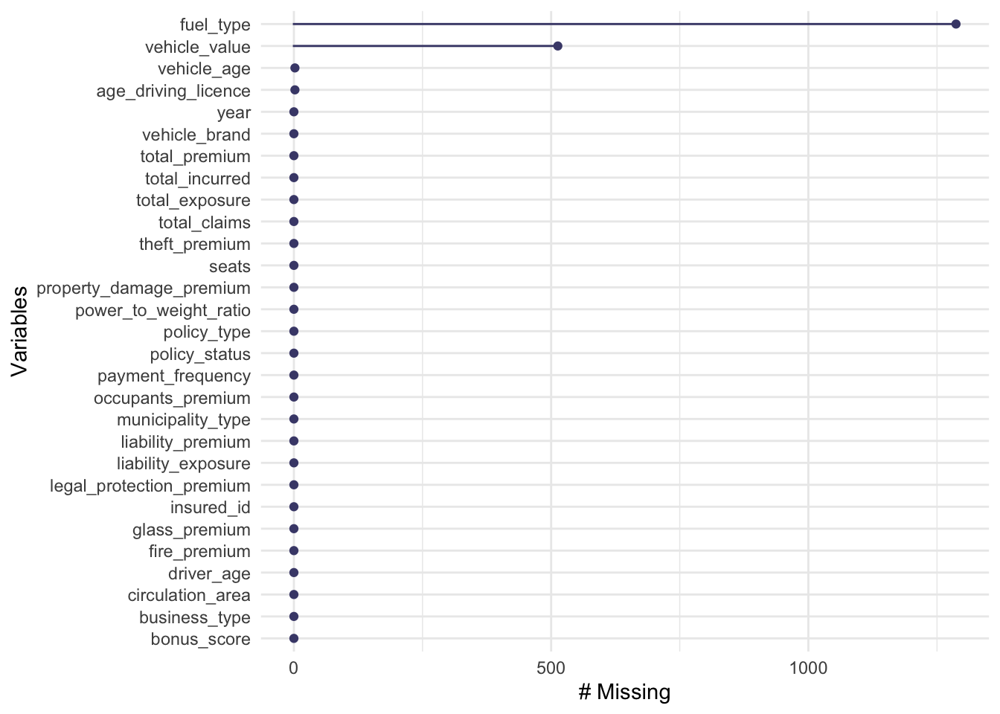
The results show that four variables contain missing values:
| Variable | Missing Count | % of Total |
|---|---|---|
fuel_type |
1,287 | 0.36% |
vehicle_value |
513 | 0.14% |
vehicle_age |
2 | <0.01% |
age_driving_licence |
2 | <0.01% |
As the missing values are very small in proportion (less than 0.5% of the total dataset), they will not significantly affect the analysis. drop_na() drops rows where any column specified contains a missing value.
insurance <- drop_na(insurance,
fuel_type, vehicle_value,
vehicle_age, age_driving_licence)
insurance# A tibble: 352,338 × 29
insured_id year policy_type policy_status business_type payment_frequency
<dbl> <dbl> <chr> <chr> <chr> <chr>
1 1 2022 COMP_E C NB A
2 2 2022 COMP_E A P A
3 2 2023 COMP_E A P A
4 2 2024 COMP_E A P A
5 3 2022 COMP_E A NB S
6 3 2023 COMP_E A P S
7 3 2024 COMP_E A P S
8 4 2022 CC A NB A
9 4 2023 CC A P A
10 4 2024 CC A P A
# ℹ 352,328 more rows
# ℹ 23 more variables: bonus_score <chr>, driver_age <dbl>, vehicle_age <dbl>,
# age_driving_licence <dbl>, fuel_type <chr>, vehicle_value <dbl>,
# seats <dbl>, power_to_weight_ratio <dbl>, vehicle_brand <chr>,
# municipality_type <chr>, circulation_area <chr>, total_premium <dbl>,
# liability_premium <dbl>, property_damage_premium <dbl>,
# theft_premium <dbl>, fire_premium <dbl>, glass_premium <dbl>, …The cleaned dataset retains 352,338 observations — a reduction of only 1,802 rows (0.51%) from the original 354,140, confirming that the removal of missing values has minimal impact on the dataset.
colnames(insurance) [1] "insured_id" "year"
[3] "policy_type" "policy_status"
[5] "business_type" "payment_frequency"
[7] "bonus_score" "driver_age"
[9] "vehicle_age" "age_driving_licence"
[11] "fuel_type" "vehicle_value"
[13] "seats" "power_to_weight_ratio"
[15] "vehicle_brand" "municipality_type"
[17] "circulation_area" "total_premium"
[19] "liability_premium" "property_damage_premium"
[21] "theft_premium" "fire_premium"
[23] "glass_premium" "legal_protection_premium"
[25] "occupants_premium" "total_exposure"
[27] "liability_exposure" "total_claims"
[29] "total_incurred" 4.3 Recoding Categorical Variables
recode() is primarily used to replace specific values in a vector with new ones. The recoded variable is then assigned using mutate() of the dplyr package.
insurance <- insurance %>%
mutate(policy_type = recode(policy_type,
"TP" = "Third-Party",
"TPG" = "Third-Party with Glass",
"CC" = "Third-Party Combined",
"COMP_E" = "Comprehensive with Excess",
"COMP_N" = "Comprehensive without Excess"))insurance <- insurance %>%
mutate(policy_status = recode(policy_status,
"A" = "Active",
"C" = "Cancelled"))insurance <- insurance %>%
mutate(business_type = recode(business_type,
"NB" = "New Business",
"P" = "Portfolio"))insurance <- insurance %>%
mutate(payment_frequency = recode(payment_frequency,
"A" = "Annual",
"S" = "Semi-Annual",
"Q" = "Quarterly"))insurance <- insurance %>%
mutate(bonus_score = recode(bonus_score,
"G" = "Good",
"N" = "Neutral",
"B" = "Bad"))insurance <- insurance %>%
mutate(fuel_type = recode(fuel_type,
"D" = "Diesel",
"G" = "Gasoline"))insurance <- insurance %>%
mutate(municipality_type = recode(municipality_type,
"I" = "Inland",
"C" = "Coastal",
"IS" = "Islands"))insurance <- insurance %>%
mutate(circulation_area = recode(circulation_area,
"U" = "Urban",
"R" = "Rural"))4.4 Data Type Conversion
From the glimpse() output earlier, the categorical variables are currently stored as character (chr) data type. They need to be converted to factors (fct) so that R treats them correctly in visualisations and statistical analyses. mutate() and as.factor() of the dplyr package are used to perform the conversion.
insurance <- insurance %>%
mutate(policy_type = as.factor(policy_type),
policy_status = as.factor(policy_status),
business_type = as.factor(business_type),
payment_frequency = as.factor(payment_frequency),
bonus_score = as.factor(bonus_score),
fuel_type = as.factor(fuel_type),
vehicle_brand = as.factor(vehicle_brand),
municipality_type = as.factor(municipality_type),
circulation_area = as.factor(circulation_area),
year = as.factor(year),
seats = as.factor(seats))glimpse(insurance)Rows: 352,338
Columns: 29
$ insured_id <dbl> 1, 2, 2, 2, 3, 3, 3, 4, 4, 4, 5, 5, 5, 6, 6, …
$ year <fct> 2022, 2022, 2023, 2024, 2022, 2023, 2024, 202…
$ policy_type <fct> Comprehensive with Excess, Comprehensive with…
$ policy_status <fct> Cancelled, Active, Active, Active, Active, Ac…
$ business_type <fct> New Business, Portfolio, Portfolio, Portfolio…
$ payment_frequency <fct> Annual, Annual, Annual, Annual, Semi-Annual, …
$ bonus_score <fct> Good, Good, Good, Good, Good, Good, Good, Goo…
$ driver_age <dbl> 48, 43, 44, 45, 45, 46, 47, 32, 33, 34, 39, 4…
$ vehicle_age <dbl> 22, 24, 25, 26, 26, 27, 28, 12, 13, 14, 20, 2…
$ age_driving_licence <dbl> 26, 19, 19, 18, 19, 19, 19, 19, 19, 19, 19, 1…
$ fuel_type <fct> Gasoline, Diesel, Diesel, Diesel, Diesel, Die…
$ vehicle_value <dbl> 149511.44, 65065.12, 65065.12, 65065.12, 5162…
$ seats <fct> 4, 8, 8, 8, 7, 7, 7, 5, 5, 5, 5, 5, 5, 5, 5, …
$ power_to_weight_ratio <dbl> 3.92, 10.15, 10.15, 10.15, 9.19, 9.19, 9.19, …
$ vehicle_brand <fct> PORSCHE, MERCEDES, MERCEDES, MERCEDES, KIA, K…
$ municipality_type <fct> Inland, Inland, Inland, Inland, Inland, Inlan…
$ circulation_area <fct> Urban, Urban, Urban, Urban, Rural, Rural, Rur…
$ total_premium <dbl> 279.5576, 546.6234, 548.7526, 584.6324, 687.4…
$ liability_premium <dbl> 30.60232, 114.33336, 110.66689, 122.09253, 21…
$ property_damage_premium <dbl> 121.9127, 303.1060, 304.9560, 305.2251, 354.8…
$ theft_premium <dbl> 112.361489, 80.784824, 83.521384, 107.886872,…
$ fire_premium <dbl> 3.832441, 7.826861, 6.151465, 5.842892, 7.715…
$ glass_premium <dbl> 8.305788, 30.091751, 32.861626, 31.101584, 48…
$ legal_protection_premium <dbl> 2.043622, 7.812747, 7.655637, 10.084173, 6.70…
$ occupants_premium <dbl> 0.4992053, 2.6679084, 2.9395659, 2.3992827, 1…
$ total_exposure <dbl> 0.09863014, 1.00000000, 1.00000000, 1.0000000…
$ liability_exposure <dbl> 0.09863014, 1.00000000, 1.00000000, 1.0000000…
$ total_claims <dbl> 0, 0, 1, 2, 0, 0, 0, 0, 0, 0, 0, 0, 0, 5, 0, …
$ total_incurred <dbl> 0.000, 0.000, 233.013, 2586.361, 0.000, 0.000…4.5 Variable Creation
Three new variables are created to support the analysis of portfolio profitability and volatility. mutate() of the dplyr package is used to create these variables.
4.5.1 Loss Ratio
loss_ratio is calculated as the ratio of total incurred costs to total premium collected. A loss ratio greater than 1 indicates that the insurer paid out more in claims than it collected in premiums, reflecting poor profitability.
insurance <- insurance %>%
mutate(loss_ratio = total_incurred / total_premium)4.5.2 Claim Frequency
claim_frequency is calculated as the ratio of total claims to total exposure. It measures how often claims occur per policy year, reflecting the volatility of the portfolio.
insurance <- insurance %>%
mutate(claim_frequency = total_claims / total_exposure)4.5.3 Has Claim
has_claim is a binary indicator variable that takes the value 1 if a policy has at least one claim, and 0 otherwise. It is useful for identifying which policies have experienced a loss.
insurance <- insurance %>%
mutate(has_claim = ifelse(total_claims > 0, 1, 0))glimpse(insurance)Rows: 352,338
Columns: 32
$ insured_id <dbl> 1, 2, 2, 2, 3, 3, 3, 4, 4, 4, 5, 5, 5, 6, 6, …
$ year <fct> 2022, 2022, 2023, 2024, 2022, 2023, 2024, 202…
$ policy_type <fct> Comprehensive with Excess, Comprehensive with…
$ policy_status <fct> Cancelled, Active, Active, Active, Active, Ac…
$ business_type <fct> New Business, Portfolio, Portfolio, Portfolio…
$ payment_frequency <fct> Annual, Annual, Annual, Annual, Semi-Annual, …
$ bonus_score <fct> Good, Good, Good, Good, Good, Good, Good, Goo…
$ driver_age <dbl> 48, 43, 44, 45, 45, 46, 47, 32, 33, 34, 39, 4…
$ vehicle_age <dbl> 22, 24, 25, 26, 26, 27, 28, 12, 13, 14, 20, 2…
$ age_driving_licence <dbl> 26, 19, 19, 18, 19, 19, 19, 19, 19, 19, 19, 1…
$ fuel_type <fct> Gasoline, Diesel, Diesel, Diesel, Diesel, Die…
$ vehicle_value <dbl> 149511.44, 65065.12, 65065.12, 65065.12, 5162…
$ seats <fct> 4, 8, 8, 8, 7, 7, 7, 5, 5, 5, 5, 5, 5, 5, 5, …
$ power_to_weight_ratio <dbl> 3.92, 10.15, 10.15, 10.15, 9.19, 9.19, 9.19, …
$ vehicle_brand <fct> PORSCHE, MERCEDES, MERCEDES, MERCEDES, KIA, K…
$ municipality_type <fct> Inland, Inland, Inland, Inland, Inland, Inlan…
$ circulation_area <fct> Urban, Urban, Urban, Urban, Rural, Rural, Rur…
$ total_premium <dbl> 279.5576, 546.6234, 548.7526, 584.6324, 687.4…
$ liability_premium <dbl> 30.60232, 114.33336, 110.66689, 122.09253, 21…
$ property_damage_premium <dbl> 121.9127, 303.1060, 304.9560, 305.2251, 354.8…
$ theft_premium <dbl> 112.361489, 80.784824, 83.521384, 107.886872,…
$ fire_premium <dbl> 3.832441, 7.826861, 6.151465, 5.842892, 7.715…
$ glass_premium <dbl> 8.305788, 30.091751, 32.861626, 31.101584, 48…
$ legal_protection_premium <dbl> 2.043622, 7.812747, 7.655637, 10.084173, 6.70…
$ occupants_premium <dbl> 0.4992053, 2.6679084, 2.9395659, 2.3992827, 1…
$ total_exposure <dbl> 0.09863014, 1.00000000, 1.00000000, 1.0000000…
$ liability_exposure <dbl> 0.09863014, 1.00000000, 1.00000000, 1.0000000…
$ total_claims <dbl> 0, 0, 1, 2, 0, 0, 0, 0, 0, 0, 0, 0, 0, 5, 0, …
$ total_incurred <dbl> 0.000, 0.000, 233.013, 2586.361, 0.000, 0.000…
$ loss_ratio <dbl> 0.0000000, 0.0000000, 0.4246231, 4.4239104, 0…
$ claim_frequency <dbl> 0, 0, 1, 2, 0, 0, 0, 0, 0, 0, 0, 0, 0, 5, 0, …
$ has_claim <dbl> 0, 0, 1, 1, 0, 0, 0, 0, 0, 0, 0, 0, 0, 1, 0, …The dataset now contains 352,338 observations across 32 variables, with loss_ratio, claim_frequency and has_claim successfully added.
write_rds(insurance, "insurance_clean.rds")insurance <- read_rds("insurance_clean.rds")5 Univariate Analysis
5.1 Target Variables
The target variables are loss_ratio, claim_frequency, total_incurred and has_claim, which measure portfolio profitability, volatility, claim severity and claim occurrence respectively. As some variables contain extreme outliers, the analysis is restricted to a reasonable range for visualisation purposes. Before diving into the Exploratory Data Analysis, the distributions of key variables are examined individually to better understand their characteristics and identify any notable patterns.
loss_ratio measures the ratio of total incurred costs to total premium collected. A loss ratio greater than 1 indicates that the insurer paid out more in claims than it collected in premiums.
A raincloud plot is used here as it combines a half-violin density plot, boxplot and individual data points into a single view, providing a more complete picture of the distribution than a histogram or boxplot alone — simultaneously showing shape, central tendency, spread and outliers.
insurance_lr <- insurance %>%
filter(loss_ratio < 10,
loss_ratio > 0)
ggplot(insurance_lr,
aes(x = 0, y = loss_ratio)) +
stat_halfeye(adjust = 0.5,
justification = -0.2,
.width = 0,
point_colour = NA,
fill = "#4a7c6f") +
geom_boxplot(width = 0.2,
outlier.shape = NA,
fill = "#7aadab",
alpha = 0.5) +
coord_flip() +
labs(title = "Distribution of Loss Ratio",
subtitle = "Policies with loss ratio between 0 and 10",
x = NULL,
y = "Loss Ratio") +
theme_minimal() +
theme(axis.text.y = element_blank(),
axis.ticks.y = element_blank())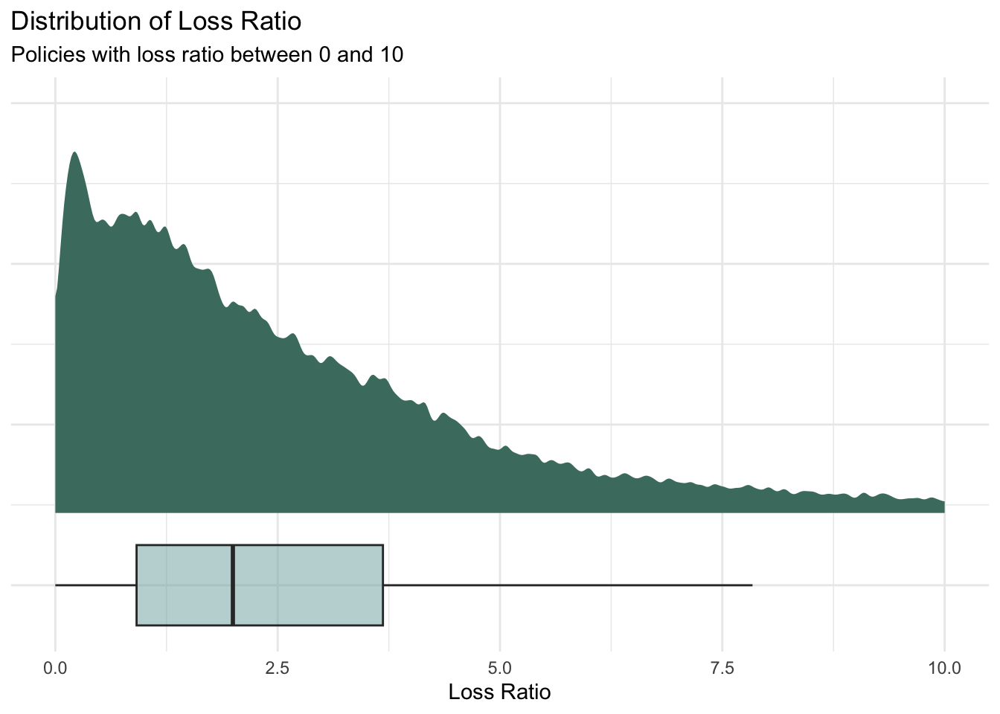
The raincloud plot reveals that loss_ratio is highly right-skewed among policies with claims. Most policies record a loss ratio between 1.0 and 2.5, indicating that incurred costs typically exceed premiums collected. The long right tail suggests that a small number of policies experience exceptionally high losses, which significantly impacts overall portfolio profitability.
A histogram paired with a boxplot is used below to complement the raincloud plot — the histogram reveals the precise frequency distribution while the boxplot highlights the median and interquartile range in a compact format.
p1 <- ggplot(insurance_lr,
aes(x = loss_ratio)) +
geom_histogram(binwidth = 0.1,
fill = "#4a7c6f",
colour = "white") +
geom_vline(aes(xintercept = mean(loss_ratio)),
colour = "red",
linetype = "dashed",
linewidth = 0.8) +
geom_vline(aes(xintercept = median(loss_ratio)),
colour = "blue",
linetype = "dashed",
linewidth = 0.8) +
annotate("text", x = mean(insurance_lr$loss_ratio) + 0.3,
y = Inf, vjust = 2,
label = paste("Mean:", round(mean(insurance_lr$loss_ratio), 2)),
colour = "red", size = 3) +
annotate("text", x = median(insurance_lr$loss_ratio) + 0.3,
y = Inf, vjust = 4,
label = paste("Median:", round(median(insurance_lr$loss_ratio), 2)),
colour = "blue", size = 3) +
labs(title = "Distribution of Loss Ratio",
x = "Loss Ratio",
y = "Count") +
theme_minimal()
p2 <- ggplot(insurance_lr,
aes(x = loss_ratio,
y = "")) +
geom_boxplot(fill = "#7aadab",
outlier.alpha = 0.3,
outlier.size = 0.5) +
labs(x = "Loss Ratio",
y = NULL) +
theme_minimal()
p2 / p1 +
plot_layout(heights = c(1, 3.5))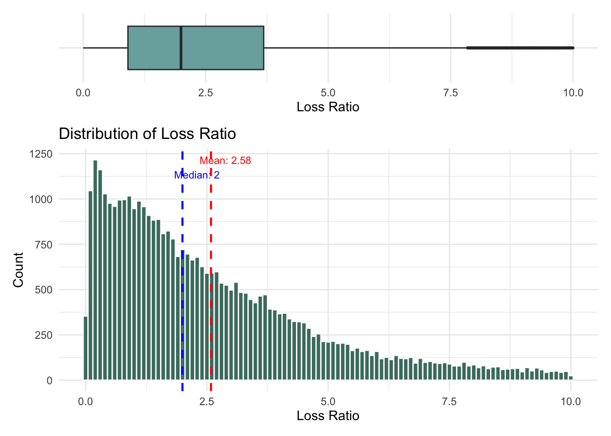
The distribution of loss_ratio is highly right-skewed, with the majority of policies having a loss ratio of 0 (no claims made). The mean loss ratio is higher than the median, indicating the presence of a small number of policies with very high loss ratios that pull the mean upward.
claim_frequency measures the ratio of total claims to total exposure. A higher claim frequency indicates greater volatility in the portfolio.
A raincloud plot is used here for the same reasons as loss_ratio — combining density, boxplot and dot layers provides a richer distributional view than any single chart type.
insurance_cf <- insurance %>%
filter(claim_frequency < 10,
claim_frequency > 0)
ggplot(insurance_cf,
aes(x = 0, y = claim_frequency)) +
stat_halfeye(adjust = 0.5,
justification = -0.2,
.width = 0,
point_colour = NA,
fill = "#4a7c6f") +
geom_boxplot(width = 0.2,
outlier.shape = NA,
fill = "#7aadab",
alpha = 0.5) +
stat_dots(side = "left",
justification = 1.1,
binwidth = 0.05,
colour = "#4a7c6f",
alpha = 0.3) +
coord_flip() +
labs(title = "Distribution of Claim Frequency",
subtitle = "Policies with claim frequency between 0 and 10",
x = NULL,
y = "Claim Frequency") +
theme_minimal() +
theme(axis.text.y = element_blank(),
axis.ticks.y = element_blank())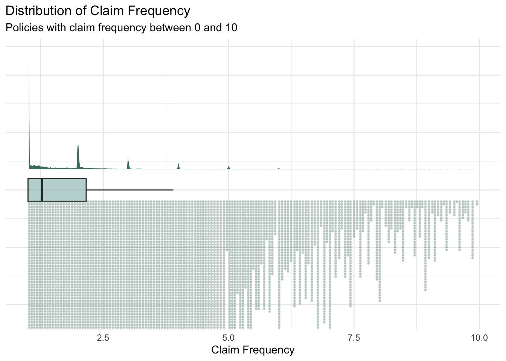
p3 <- ggplot(insurance_cf,
aes(x = claim_frequency)) +
geom_histogram(binwidth = 0.1,
fill = "#4a7c6f",
colour = "white") +
geom_vline(aes(xintercept = mean(claim_frequency)),
colour = "red",
linetype = "dashed",
linewidth = 0.8) +
geom_vline(aes(xintercept = median(claim_frequency)),
colour = "blue",
linetype = "dashed",
linewidth = 0.8) +
annotate("text", x = mean(insurance_cf$claim_frequency) + 0.3,
y = Inf, vjust = 2,
label = paste("Mean:", round(mean(insurance_cf$claim_frequency), 2)),
colour = "red", size = 3) +
annotate("text", x = median(insurance_cf$claim_frequency) + 0.3,
y = Inf, vjust = 4,
label = paste("Median:", round(median(insurance_cf$claim_frequency), 2)),
colour = "blue", size = 3) +
labs(title = "Distribution of Claim Frequency",
x = "Claim Frequency",
y = "Count") +
theme_minimal()
p4 <- ggplot(insurance_cf,
aes(x = claim_frequency,
y = "")) +
geom_boxplot(fill = "#7aadab",
outlier.alpha = 0.3,
outlier.size = 0.5) +
labs(x = "Claim Frequency",
y = NULL) +
theme_minimal()
p4 / p3 +
plot_layout(heights = c(1, 3.5))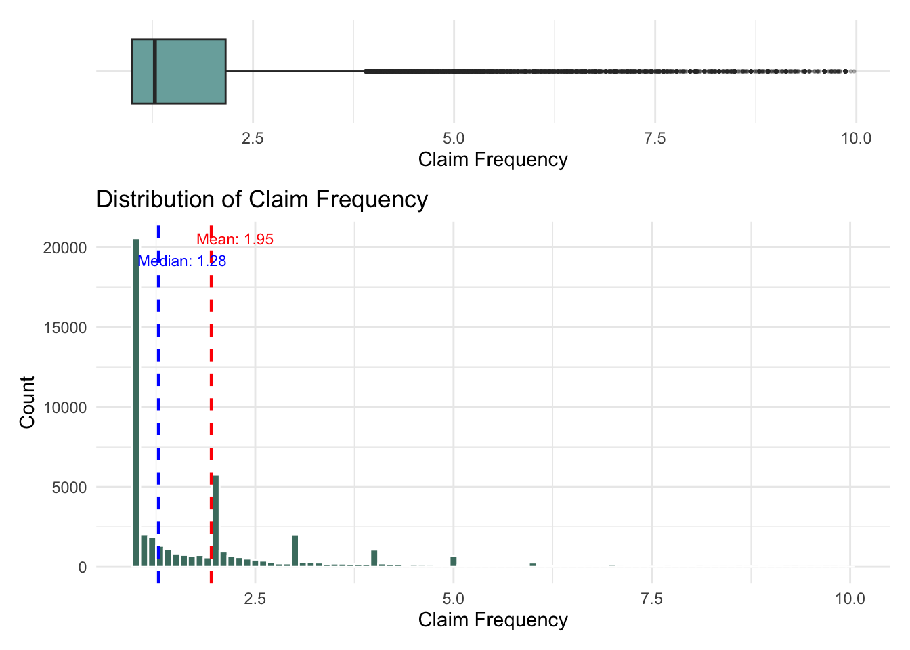
The distribution of claim_frequency is heavily right-skewed, with most policies recording a claim frequency of around 1, meaning one claim per policy year. The mean of 1.95 is noticeably higher than the median of 1.28, driven by a small number of high-frequency claimants. The boxplot reveals numerous outliers beyond the upper whisker, indicating that a subset of policies experience a disproportionately high number of claims, contributing significantly to portfolio volatility.
Total Incurred
total_incurred represents the total incurred cost of claims for each policy, including paid amounts and outstanding reserves. Only policies with claims are included in this analysis.
A raincloud plot is used here as it effectively communicates both the density shape and the spread of claim costs, making it easier to identify skewness and outliers simultaneously.
insurance_ti <- insurance %>%
filter(total_incurred > 0,
total_incurred < 10000)
ggplot(insurance_ti,
aes(x = 0, y = total_incurred)) +
stat_halfeye(adjust = 0.5,
justification = -0.2,
.width = 0,
point_colour = NA,
fill = "#4a7c6f") +
geom_boxplot(width = 0.2,
outlier.shape = NA,
fill = "#7aadab",
alpha = 0.5) +
stat_dots(side = "left",
justification = 1.1,
binwidth = 50,
colour = "#4a7c6f",
alpha = 0.3) +
coord_flip() +
labs(title = "Distribution of Total Incurred",
subtitle = "Policies with total incurred between €0 and €10,000",
x = NULL,
y = "Total Incurred (€)") +
theme_minimal() +
theme(axis.text.y = element_blank(),
axis.ticks.y = element_blank())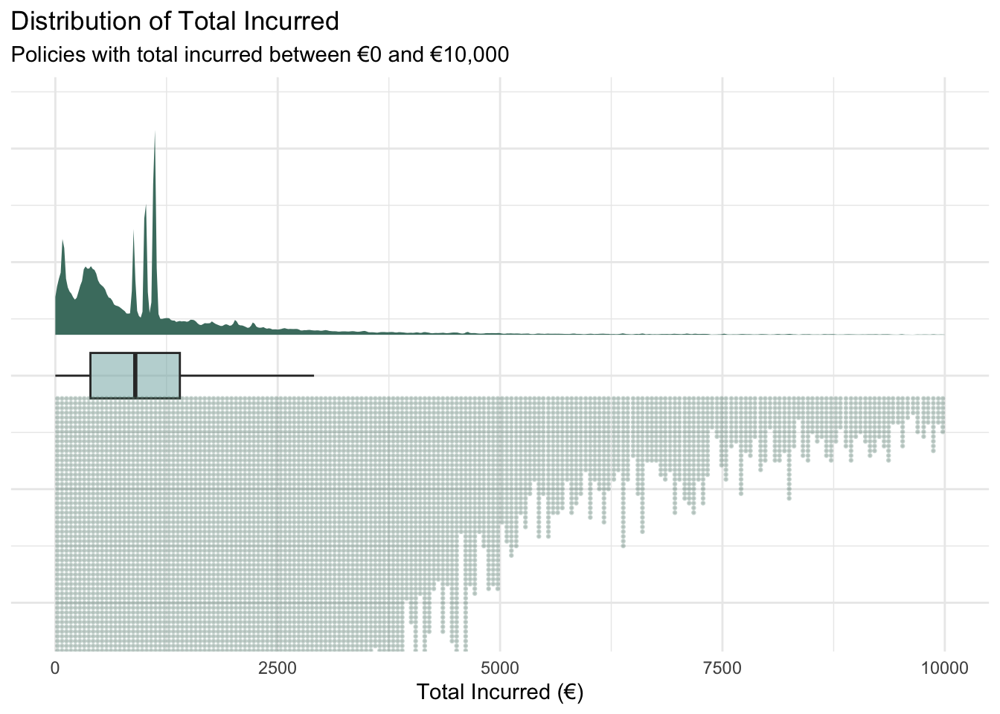
ECDF of Incurred Amount by Policy Type
An Empirical Cumulative Distribution Function (ECDF) plot is used below to complement the histogram. Unlike a histogram where the shape can change depending on bin width, the ECDF makes no such assumption, it shows directly what proportion of claims fall below any given cost level for each policy type, making it easier to compare tail behaviour across groups at a glance.
insurance %>%
filter(total_incurred > 0, total_incurred < 10000) %>%
ggplot(aes(x = total_incurred, colour = policy_type)) +
stat_ecdf(linewidth = 0.8) +
scale_x_continuous(labels = scales::comma) +
scale_colour_manual(values = c(
"Comprehensive with Excess" = "#4a7c6f",
"Comprehensive without Excess" = "#7aadab",
"Third-Party" = "#d4e8e1",
"Third-Party Combined" = "#2d5a51",
"Third-Party with Glass" = "#a8d5c2")) +
labs(title = "ECDF of Total Incurred by Policy Type",
subtitle = "Policies with total incurred between €0 and €10,000",
x = "Total Incurred (€)",
y = "Cumulative Proportion",
colour = "Policy Type") +
theme_minimal()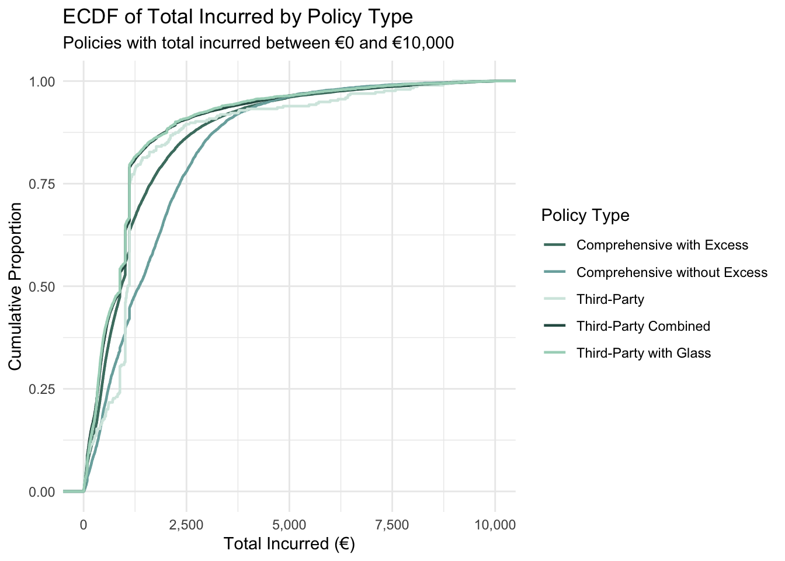
The ECDF plot shows that all five policy types follow a broadly similar distribution, with most claims concentrated below €2,500. Third-Party with Glass and Comprehensive without Excess curves rise more steeply in the lower cost range, indicating a higher proportion of small, cheap claims, consistent with the finding that the absence of an excess encourages filing of minor claims. Comprehensive with Excess and Third-Party Combined have slightly flatter curves, suggesting a wider spread of claim costs including a larger proportion of mid-to-high cost claims. Third-Party shows the most gradual curve, indicating the greatest spread of claim costs across the full range though its small sample size means this should be interpreted with caution.
p5 <- ggplot(insurance_ti,
aes(x = total_incurred)) +
geom_histogram(binwidth = 200,
fill = "#4a7c6f",
colour = "white") +
geom_vline(aes(xintercept = mean(total_incurred)),
colour = "red",
linetype = "dashed",
linewidth = 0.8) +
geom_vline(aes(xintercept = median(total_incurred)),
colour = "blue",
linetype = "dashed",
linewidth = 0.8) +
annotate("text", x = mean(insurance_ti$total_incurred) + 500,
y = Inf, vjust = 2,
label = paste("Mean: €", round(mean(insurance_ti$total_incurred), 2)),
colour = "red", size = 3) +
annotate("text", x = median(insurance_ti$total_incurred) + 500,
y = Inf, vjust = 4,
label = paste("Median: €", round(median(insurance_ti$total_incurred), 2)),
colour = "blue", size = 3) +
labs(title = "Distribution of Total Incurred",
x = "Total Incurred (€)",
y = "Count") +
theme_minimal()
p6 <- ggplot(insurance_ti,
aes(x = total_incurred,
y = "")) +
geom_boxplot(fill = "#7aadab",
outlier.alpha = 0.3,
outlier.size = 0.5) +
labs(x = "Total Incurred (€)",
y = NULL) +
theme_minimal()
p6 / p5 +
plot_layout(heights = c(1, 3.5))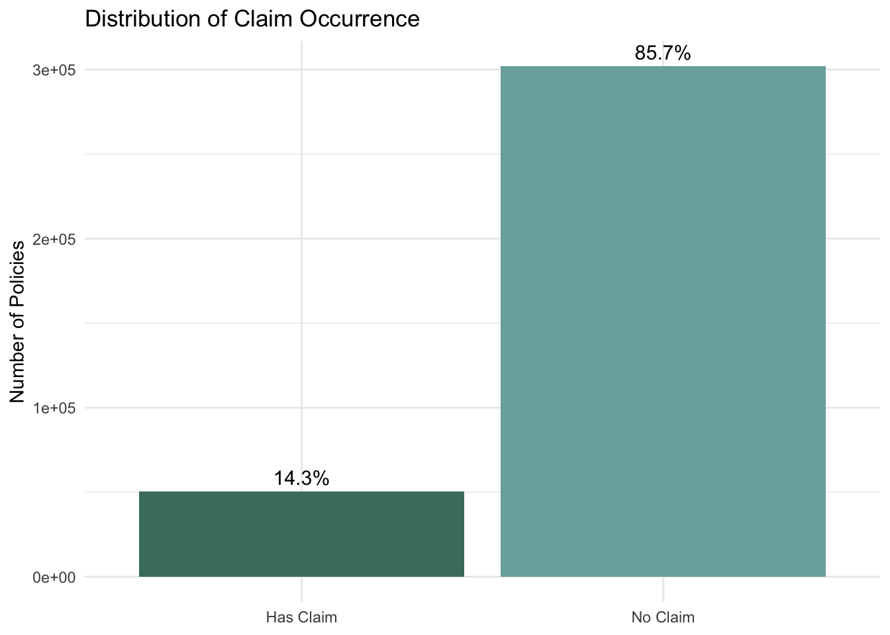
The distribution of total_incurred is moderately right-skewed, with most policies recording claim costs below €2,500. The mean of €1,271.98 is higher than the median of €898.68, indicating that a small number of high-cost claims pull the average upward. Overall, the majority of claims are relatively manageable in size, though the long tail suggests that occasional large claims do occur within the portfolio.
Has Claim
has_claim is a binary variable indicating whether a policy has recorded at least one claim (1) or no claims (0). A bar chart is used here as it is the most appropriate chart type for a binary categorical variable — directly showing the count and proportion of each group without implying any ordering or magnitude between them.
insurance %>%
mutate(has_claim = ifelse(has_claim == 1,
"Has Claim",
"No Claim")) %>%
count(has_claim) %>%
mutate(pct = n / sum(n) * 100) %>%
ggplot(aes(x = has_claim,
y = n,
fill = has_claim)) +
geom_col() +
geom_text(aes(label = paste0(round(pct, 1), "%")),
vjust = -0.5,
size = 4) +
scale_fill_manual(values = c("Has Claim" = "#4a7c6f",
"No Claim" = "#7aadab")) +
labs(title = "Distribution of Claim Occurrence",
x = NULL,
y = "Number of Policies") +
theme_minimal() +
theme(legend.position = "none")
The bar chart shows that 85.7% of policies in the portfolio have not recorded any claims, while only 14.3% have experienced at least one claim. This is typical of motor insurance portfolios where most policyholders do not make a claim in a given year. Despite being a small proportion, the 14.3% of policies with claims are of particular interest as they are the primary drivers of portfolio profitability and volatility.
5.2 Driver Characteristics
This section explores the distribution of driver-related variables in the portfolio, specifically driver_age and bonus_score.
driver_age represents the age of the main driver associated with each policy, measured in years. A histogram paired with a boxplot is used here — the histogram reveals the shape and spread of the age distribution, while the boxplot succinctly shows the median and interquartile range and flags any extreme outliers.
p7 <- ggplot(insurance,
aes(x = driver_age)) +
geom_histogram(binwidth = 1,
fill = "#4a7c6f",
colour = "white") +
geom_vline(aes(xintercept = mean(driver_age)),
colour = "red",
linetype = "dashed",
linewidth = 0.8) +
geom_vline(aes(xintercept = median(driver_age)),
colour = "blue",
linetype = "dashed",
linewidth = 0.8) +
annotate("text", x = mean(insurance$driver_age) + 4,
y = Inf, vjust = 2,
label = paste("Mean:", round(mean(insurance$driver_age), 1)),
colour = "red", size = 3) +
annotate("text", x = median(insurance$driver_age) + 4,
y = Inf, vjust = 4,
label = paste("Median:", round(median(insurance$driver_age), 1)),
colour = "blue", size = 3) +
labs(title = "Distribution of Driver Age",
x = "Driver Age (years)",
y = "Count") +
theme_minimal()
p8 <- ggplot(insurance,
aes(x = driver_age,
y = "")) +
geom_boxplot(fill = "#7aadab",
outlier.alpha = 0.3,
outlier.size = 0.5) +
labs(x = "Driver Age (years)",
y = NULL) +
theme_minimal()
p8 / p7 +
plot_layout(heights = c(1, 3.5))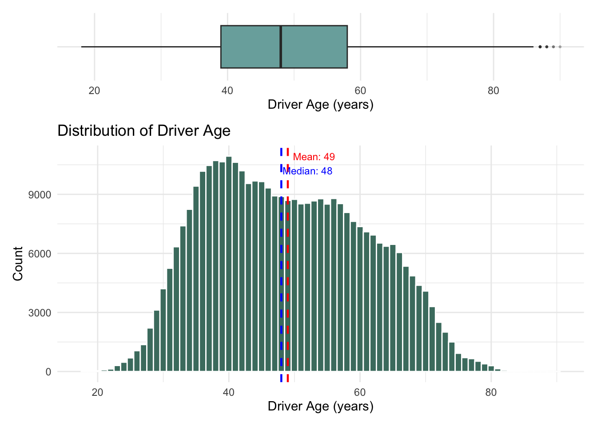
The distribution of driver_age is approximately bell-shaped and slightly right-skewed, with most drivers aged between 35 and 65 years. The mean age of 49 and median of 48 are very close, confirming a relatively symmetric distribution. The boxplot shows that the middle 50% of drivers fall between approximately 39 and 58 years old, with a small number of older drivers above 75 appearing as outliers.
bonus_score reflects the policyholder’s past claims experience — Good (G), Neutral (N) or Bad (B). A bar chart is used here as it is the most suitable chart type for an ordinal categorical variable with a small number of levels, making proportional differences easy to compare at a glance.
insurance %>%
count(bonus_score) %>%
mutate(pct = n / sum(n) * 100) %>%
ggplot(aes(x = reorder(bonus_score, -n),
y = n,
fill = bonus_score)) +
geom_col() +
geom_text(aes(label = paste0(round(pct, 1), "%")),
vjust = -0.5,
size = 4) +
scale_y_continuous(labels = scales::comma) +
scale_fill_manual(values = c("Good" = "#4a7c6f",
"Neutral" = "#7aadab",
"Bad" = "#d4e8e1")) +
labs(title = "Distribution of Bonus Score",
x = "Bonus Score",
y = "Number of Policies") +
theme_minimal() +
theme(legend.position = "none")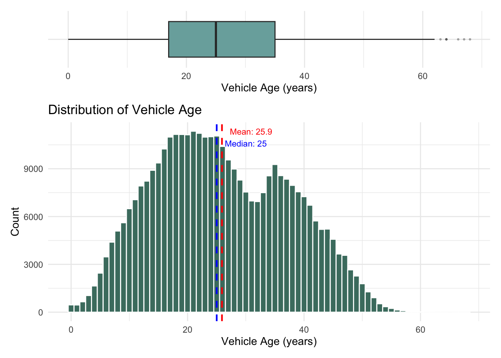
The bar chart shows that 96.5% of policies belong to policyholders with a Good bonus score, indicating a strong claims history across the portfolio. Only 2.2% are Neutral and 1.3% are Bad. This suggests that the portfolio is largely made up of low-risk, experienced policyholders who have rarely or never made a claim.
5.3 Vehicle Characteristics
This section explores the distribution of vehicle-related variables in the portfolio, specifically vehicle_age, vehicle_value, fuel_type and vehicle_brand.
vehicle_age represents the age of the insured vehicle in years. A histogram and boxplot combination is used here for the same reasons as driver_age — the histogram reveals the shape and spread of the age distribution, while the boxplot highlights central tendency and outliers.
p9 <- ggplot(insurance,
aes(x = vehicle_age)) +
geom_histogram(binwidth = 1,
fill = "#4a7c6f",
colour = "white") +
geom_vline(aes(xintercept = mean(vehicle_age)),
colour = "red",
linetype = "dashed",
linewidth = 0.8) +
geom_vline(aes(xintercept = median(vehicle_age)),
colour = "blue",
linetype = "dashed",
linewidth = 0.8) +
annotate("text", x = mean(insurance$vehicle_age) + 5,
y = Inf, vjust = 2,
label = paste("Mean:", round(mean(insurance$vehicle_age), 1)),
colour = "red", size = 3) +
annotate("text", x = median(insurance$vehicle_age) + 5,
y = Inf, vjust = 4,
label = paste("Median:", round(median(insurance$vehicle_age), 1)),
colour = "blue", size = 3) +
labs(title = "Distribution of Vehicle Age",
x = "Vehicle Age (years)",
y = "Count") +
theme_minimal()
p10 <- ggplot(insurance,
aes(x = vehicle_age,
y = "")) +
geom_boxplot(fill = "#7aadab",
outlier.alpha = 0.3,
outlier.size = 0.5) +
labs(x = "Vehicle Age (years)",
y = NULL) +
theme_minimal()
p10 / p9 +
plot_layout(heights = c(1, 3.5))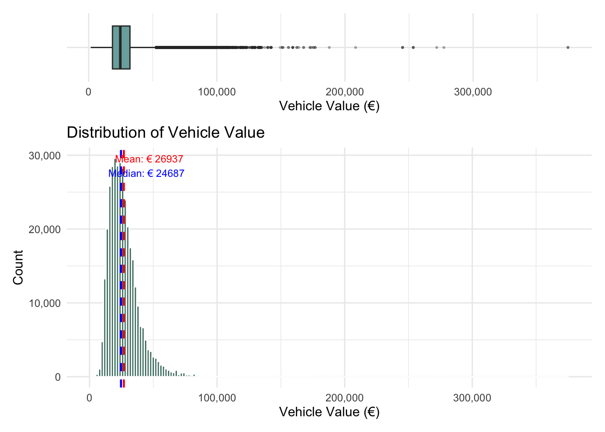
The distribution of vehicle_age is approximately bell-shaped, with most vehicles aged between 15 and 40 years. The mean of 25.9 years and median of 25 years are very close together, confirming a relatively symmetric distribution. This suggests that the portfolio is dominated by older vehicles, which may reflect the nature of the Spanish non-life insurance market. The boxplot reveals a small number of very old vehicles (over 55 years) appearing as outliers.
vehicle_value represents the declared insured value of the vehicle in euros. A histogram and boxplot combination is used here as vehicle_value is a continuous numerical variable — the histogram reveals the distribution shape and the location of the mode, while the boxplot highlights the extent of outliers in the upper tail.
p11 <- ggplot(insurance,
aes(x = vehicle_value)) +
geom_histogram(binwidth = 2000,
fill = "#4a7c6f",
colour = "white") +
geom_vline(aes(xintercept = mean(vehicle_value)),
colour = "red",
linetype = "dashed",
linewidth = 0.8) +
geom_vline(aes(xintercept = median(vehicle_value)),
colour = "blue",
linetype = "dashed",
linewidth = 0.8) +
annotate("text", x = mean(insurance$vehicle_value) + 20000,
y = Inf, vjust = 2,
label = paste("Mean: €", round(mean(insurance$vehicle_value), 0)),
colour = "red", size = 3) +
annotate("text", x = median(insurance$vehicle_value) + 20000,
y = Inf, vjust = 4,
label = paste("Median: €", round(median(insurance$vehicle_value), 0)),
colour = "blue", size = 3) +
scale_x_continuous(labels = scales::comma) +
scale_y_continuous(labels = scales::comma) +
labs(title = "Distribution of Vehicle Value",
x = "Vehicle Value (€)",
y = "Count") +
theme_minimal()
p12 <- ggplot(insurance,
aes(x = vehicle_value,
y = "")) +
geom_boxplot(fill = "#7aadab",
outlier.alpha = 0.3,
outlier.size = 0.5) +
scale_x_continuous(labels = scales::comma) +
labs(x = "Vehicle Value (€)",
y = NULL) +
theme_minimal()
p12 / p11 +
plot_layout(heights = c(1, 3.5))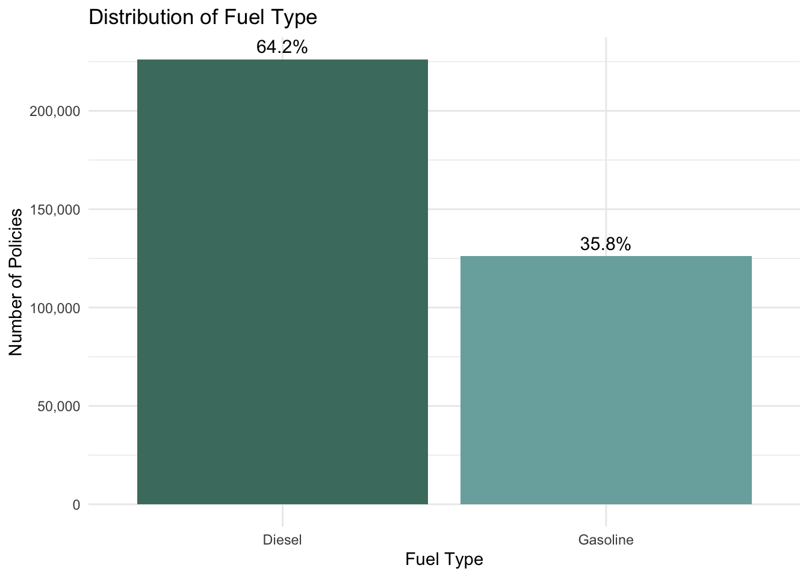
The distribution of vehicle_value is highly right-skewed, with the majority of vehicles valued below €50,000. The mean of €26,937 is slightly higher than the median of €24,687, indicating that a small number of high-value vehicles are pulling the average upward. The boxplot confirms the presence of numerous extreme outliers stretching beyond €200,000, likely representing luxury or high-performance vehicles.
fuel_type indicates whether the vehicle runs on Diesel or Gasoline. A bar chart is used here as fuel_type is a binary categorical variable — a bar chart directly compares the count and proportion of each group without implying any quantitative scale between them.
insurance %>%
count(fuel_type) %>%
mutate(pct = n / sum(n) * 100) %>%
ggplot(aes(x = reorder(fuel_type, -n),
y = n,
fill = fuel_type)) +
geom_col() +
geom_text(aes(label = paste0(round(pct, 1), "%")),
vjust = -0.5,
size = 4) +
scale_y_continuous(labels = scales::comma) +
scale_fill_manual(values = c("Diesel" = "#4a7c6f",
"Gasoline" = "#7aadab")) +
labs(title = "Distribution of Fuel Type",
x = "Fuel Type",
y = "Number of Policies") +
theme_minimal() +
theme(legend.position = "none")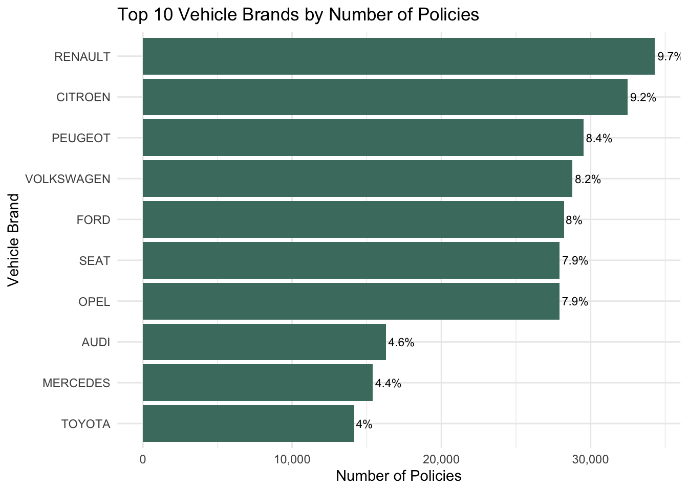
The bar chart shows that 64.2% of policies are associated with Diesel vehicles, while 35.8% are Gasoline. The predominance of diesel vehicles reflects the historically strong preference for diesel cars in the Spanish market, particularly for older vehicles which make up a large proportion of this portfolio.
vehicle_brand represents the brand of the insured vehicle. As there are 65 brands in the dataset, only the top 10 most common brands are shown for clarity. A horizontal bar chart is used here as it is the most appropriate chart type for a categorical variable with many levels — the horizontal orientation prevents label overlap and the ranking order makes comparisons intuitive.
insurance %>%
count(vehicle_brand) %>%
arrange(desc(n)) %>%
slice_head(n = 10) %>%
mutate(pct = n / sum(insurance %>% count(vehicle_brand) %>% pull(n)) * 100) %>%
ggplot(aes(x = reorder(vehicle_brand, n),
y = n)) +
geom_col(fill = "#4a7c6f") +
geom_text(aes(label = paste0(round(pct, 1), "%")),
hjust = -0.1,
size = 3) +
scale_y_continuous(labels = scales::comma) +
coord_flip() +
labs(title = "Top 10 Vehicle Brands by Number of Policies",
x = "Vehicle Brand",
y = "Number of Policies") +
theme_minimal()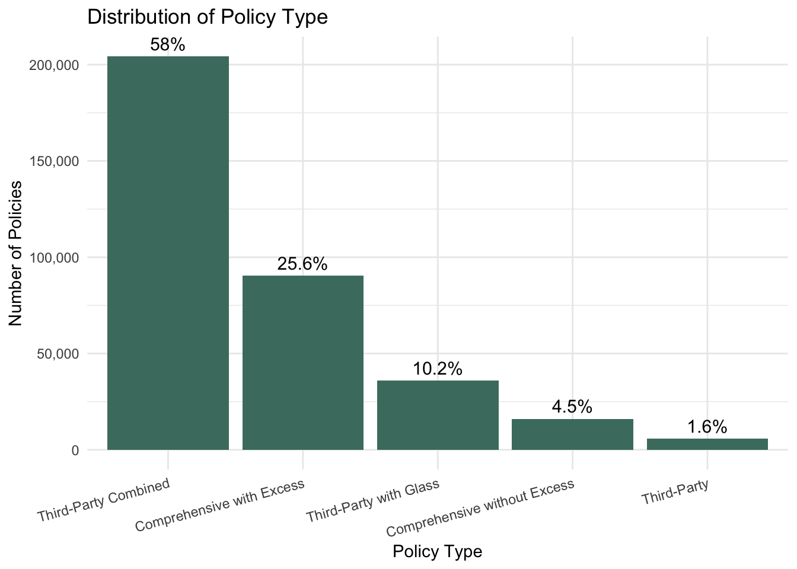
The bar chart shows that Renault (9.7%), Citroen (9.2%) and Peugeot (8.4%) are the three most common vehicle brands in the portfolio, reflecting the strong presence of French automobile brands in the Spanish market. The top 7 brands are all European, with SEAT being the only Spanish brand in the list. Toyota is the only Asian brand to appear in the top 10, ranking last with 4% of policies.
5.4 Policy Characteristics
This section explores the distribution of policy-related variables in the portfolio, specifically policy_type, policy_status, business_type and payment_frequency.
policy_type describes the main coverage structure of the motor insurance policy. An interactive bar chart using ggiraph is used here — it allows users to hover over each bar to see the exact count and proportion, which is useful given the number of policy types and the varying label lengths.
p_interactive <- insurance %>%
count(policy_type) %>%
mutate(pct = n / sum(n) * 100,
tooltip = paste0(policy_type, "\n",
"Count: ", scales::comma(n), "\n",
"Share: ", round(pct, 1), "%")) %>%
ggplot(aes(x = reorder(policy_type, -n),
y = n,
tooltip = tooltip,
data_id = policy_type)) +
geom_col_interactive(fill = "#4a7c6f") +
geom_text(aes(label = paste0(round(pct, 1), "%")),
vjust = -0.5,
size = 4) +
scale_y_continuous(labels = scales::comma) +
labs(title = "Distribution of Policy Type",
x = "Policy Type",
y = "Number of Policies") +
theme_minimal() +
theme(legend.position = "none",
axis.text.x = element_text(angle = 15, hjust = 1))
girafe(ggobj = p_interactive,
width_svg = 8,
height_svg = 4)The bar chart shows that Third-Party Combined policies account for the largest share of the portfolio at 58%, followed by Comprehensive with Excess at 25.6%. Third-Party with Glass (10.2%) and Comprehensive without Excess (4.5%) make up smaller proportions, while basic Third-Party policies are the least common at only 1.6%. The dominance of Third-Party Combined policies suggests that most policyholders opt for broader coverage beyond basic liability, combining theft, fire and glass protection in a single policy.
insurance %>%
count(policy_status) %>%
mutate(pct = n / sum(n) * 100) %>%
ggplot(aes(x = reorder(policy_status, -n),
y = n,
fill = policy_status)) +
geom_col() +
geom_text(aes(label = paste0(round(pct, 1), "%")),
vjust = -0.5,
size = 4) +
scale_y_continuous(labels = scales::comma) +
scale_fill_manual(values = c("Active" = "#4a7c6f",
"Cancelled" = "#7aadab")) +
labs(title = "Distribution of Policy Status",
x = "Policy Status",
y = "Number of Policies") +
theme_minimal() +
theme(legend.position = "none")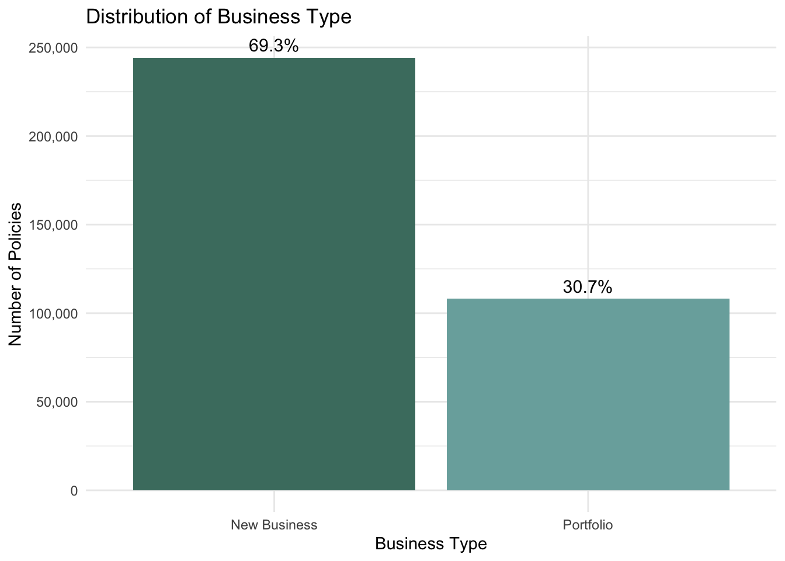
The bar chart shows that 89.2% of policies are Active, while 10.8% have been Cancelled. The low cancellation rate suggests a relatively stable and loyal customer base within the portfolio.
insurance %>%
count(business_type) %>%
mutate(pct = n / sum(n) * 100) %>%
ggplot(aes(x = reorder(business_type, -n),
y = n,
fill = business_type)) +
geom_col() +
geom_text(aes(label = paste0(round(pct, 1), "%")),
vjust = -0.5,
size = 4) +
scale_y_continuous(labels = scales::comma) +
scale_fill_manual(values = c("New Business" = "#4a7c6f",
"Portfolio" = "#7aadab")) +
labs(title = "Distribution of Business Type",
x = "Business Type",
y = "Number of Policies") +
theme_minimal() +
theme(legend.position = "none")
The bar chart shows that 69.3% of policies are New Business, while 30.7% are Portfolio renewals. The higher proportion of new business suggests that the insurer has been actively growing its customer base during the period covered by the dataset.
insurance %>%
count(payment_frequency) %>%
mutate(pct = n / sum(n) * 100) %>%
ggplot(aes(x = reorder(payment_frequency, -n),
y = n,
fill = payment_frequency)) +
geom_col() +
geom_text(aes(label = paste0(round(pct, 1), "%")),
vjust = -0.5,
size = 4) +
scale_y_continuous(labels = scales::comma) +
scale_fill_manual(values = c("Annual" = "#4a7c6f",
"Semi-Annual" = "#7aadab",
"Quarterly" = "#d4e8e1")) +
labs(title = "Distribution of Payment Frequency",
x = "Payment Frequency",
y = "Number of Policies") +
theme_minimal() +
theme(legend.position = "none")
The bar chart shows that 81.3% of policies are billed Annually, followed by Semi-Annual (14.4%) and Quarterly (4.3%). The overwhelming preference for annual billing suggests that most policyholders are comfortable committing to a full year of coverage upfront.
5.5 Geographic Characteristics
This section explores the distribution of geographic variables in the portfolio, specifically municipality_type and circulation_area.
insurance %>%
count(municipality_type) %>%
mutate(pct = n / sum(n) * 100) %>%
ggplot(aes(x = reorder(municipality_type, -n),
y = n,
fill = municipality_type)) +
geom_col() +
geom_text(aes(label = paste0(round(pct, 1), "%")),
vjust = -0.5,
size = 4) +
scale_y_continuous(labels = scales::comma) +
scale_fill_manual(values = c("Inland" = "#4a7c6f",
"Coastal" = "#7aadab",
"Islands" = "#d4e8e1")) +
labs(title = "Distribution of Municipality Type",
x = "Municipality Type",
y = "Number of Policies") +
theme_minimal() +
theme(legend.position = "none",
plot.margin = margin(t = 30))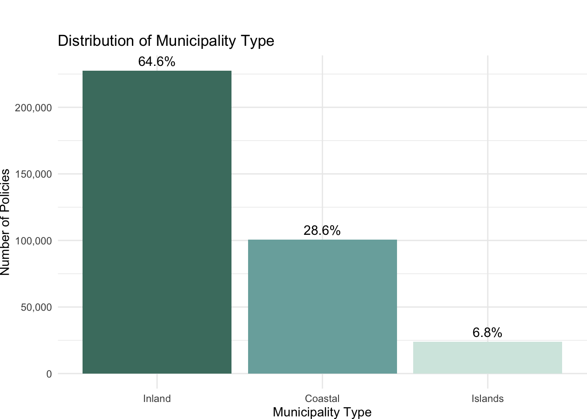
The bar chart shows that 64.6% of policies are from Inland municipalities, followed by Coastal (28.6%) and Islands (6.8%). This reflects the geographic distribution of the Spanish population, where most people live in inland cities such as Madrid.
insurance %>%
count(circulation_area) %>%
mutate(pct = n / sum(n) * 100) %>%
ggplot(aes(x = reorder(circulation_area, -n),
y = n,
fill = circulation_area)) +
geom_col() +
geom_text(aes(label = paste0(round(pct, 1), "%")),
vjust = -0.5,
size = 4) +
scale_y_continuous(labels = scales::comma) +
scale_fill_manual(values = c("Urban" = "#4a7c6f",
"Rural" = "#7aadab")) +
labs(title = "Distribution of Circulation Area",
x = "Circulation Area",
y = "Number of Policies") +
theme_minimal() +
theme(legend.position = "none",
plot.margin = margin(t = 30))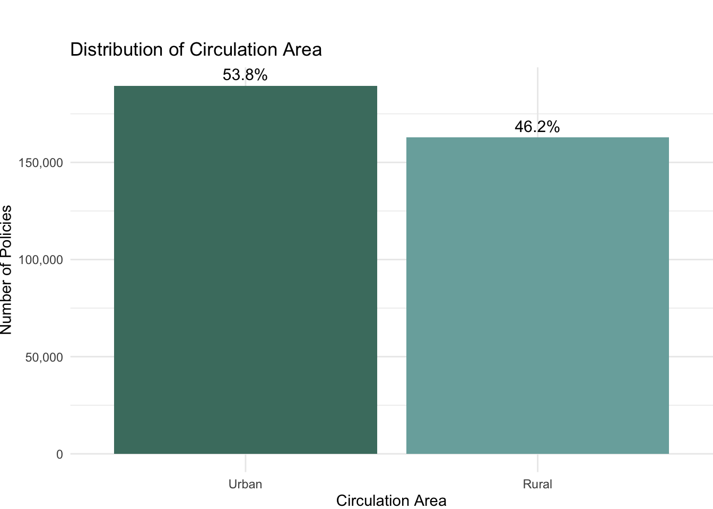
The bar chart shows that 53.8% of policies are associated with Urban circulation, while 46.2% are Rural. Urban drivers tend to face higher traffic density, which may lead to more frequent but less severe claims, while rural drivers may experience fewer but potentially more severe accidents due to higher speeds.
6 Exploratory Data Analysis
In this section, bivariate visual analytics techniques are applied to investigate and statistically validate the factors influencing the profitability and volatility of the motor insurance portfolio.
6.1 Year-on-Year Loss Ratio Trend
A line chart is used here as it is the most appropriate chart type for communicating directional trends over time — making it easy to identify whether portfolio profitability is improving or deteriorating across the three-year period. The break-even line at 1.0 provides an immediate visual reference point.
insurance %>%
group_by(year) %>%
summarise(
loss_ratio = sum(total_incurred) / sum(total_premium),
claim_freq = sum(total_claims) / sum(total_exposure)
) %>%
ggplot(aes(x = year, group = 1)) +
geom_line(aes(y = loss_ratio), colour = "#4a7c6f", linewidth = 1.2) +
geom_point(aes(y = loss_ratio), colour = "#4a7c6f", size = 3) +
geom_hline(yintercept = 1, linetype = "dashed", colour = "red") +
geom_text(aes(y = loss_ratio,
label = round(loss_ratio, 3)),
vjust = -0.8, size = 3) +
labs(title = "Portfolio Loss Ratio by Year",
subtitle = "Red dashed line = break-even (loss ratio = 1.0)",
x = "Year",
y = "Loss Ratio") +
theme_minimal()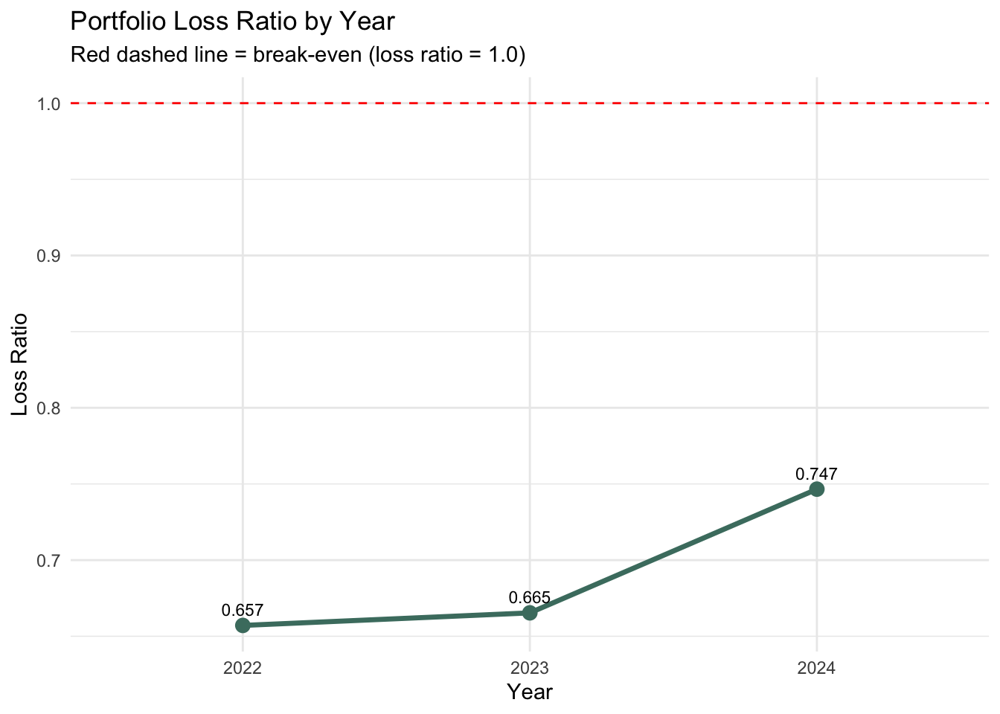
The line chart reveals how the portfolio loss ratio has evolved over the 2022–2024 period. The portfolio loss ratio has been rising steadily from 0.657 in 2022 to 0.665 in 2023 and 0.747 in 2024. While the portfolio remains below the break-even line of 1.0, meaning the insurer is still profitable overall the upward trend is a concern. If this trend continues, the portfolio could approach or breach the break-even point in future years, making it important to investigate and address the underlying loss drivers now.
6.3 Factors Affecting Loss Ratio (Profitability)
loss_ratio is used as the measure of portfolio profitability. Only policies with a loss ratio between 0 and 10 are included to exclude extreme outliers that may distort the analysis.
ggbetweenstats() of the ggstatsplot package is used throughout this section as it integrates the visual comparison of group distributions with the results of a nonparametric statistical test in a single figure. The nonparametric Kruskal-Wallis test is chosen because loss_ratio is non-normally distributed and right-skewed, violating the normality assumption required for ANOVA.
The violin plot below examines whether bonus_score — reflecting a policyholder’s past claims history — has a significant effect on loss_ratio.
ggbetweenstats(
data = insurance_lr,
x = bonus_score,
y = loss_ratio,
type = "nonparametric",
mean.ci = TRUE,
pairwise.comparisons = TRUE,
pairwise.display = "significant",
p.adjust.method = "fdr",
messages = FALSE,
title = "Loss Ratio by Bonus Score",
xlab = "Bonus Score",
ylab = "Loss Ratio",
palette = "Set2"
)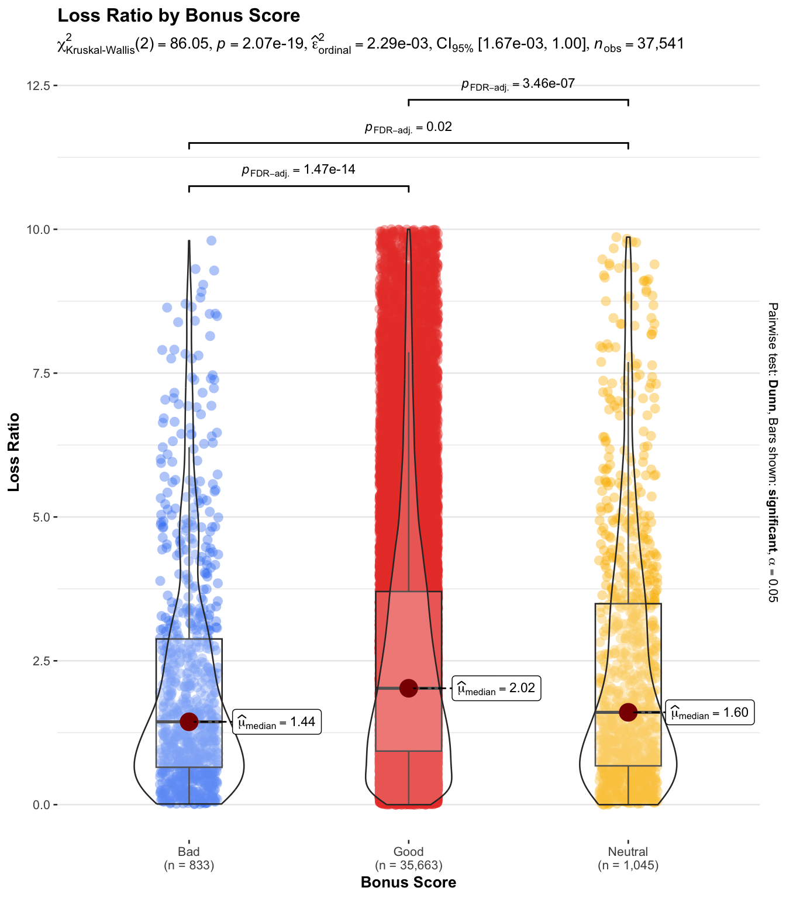
The Kruskal-Wallis test confirms a statistically significant difference in loss ratio across bonus score groups (p = 2.07e-19). Interestingly, policyholders with a Good bonus score have the highest median loss ratio of 2.02, followed by Neutral (1.60) and Bad (1.44). This counterintuitive finding may be attributed to the fact that Good bonus score policyholders dominate the portfolio (n = 35,663) and tend to hold more comprehensive policies, which attract higher claim costs. All pairwise comparisons are statistically significant, confirming that bonus score is a meaningful differentiator of portfolio profitability.
The violin plot below examines whether policy_type has a significant effect on loss_ratio.
ggbetweenstats(
data = insurance_lr,
x = policy_type,
y = loss_ratio,
type = "nonparametric",
mean.ci = TRUE,
pairwise.comparisons = TRUE,
pairwise.display = "significant",
p.adjust.method = "fdr",
messages = FALSE,
title = "Loss Ratio by Policy Type",
xlab = "Policy Type",
ylab = "Loss Ratio",
palette = "Set2"
)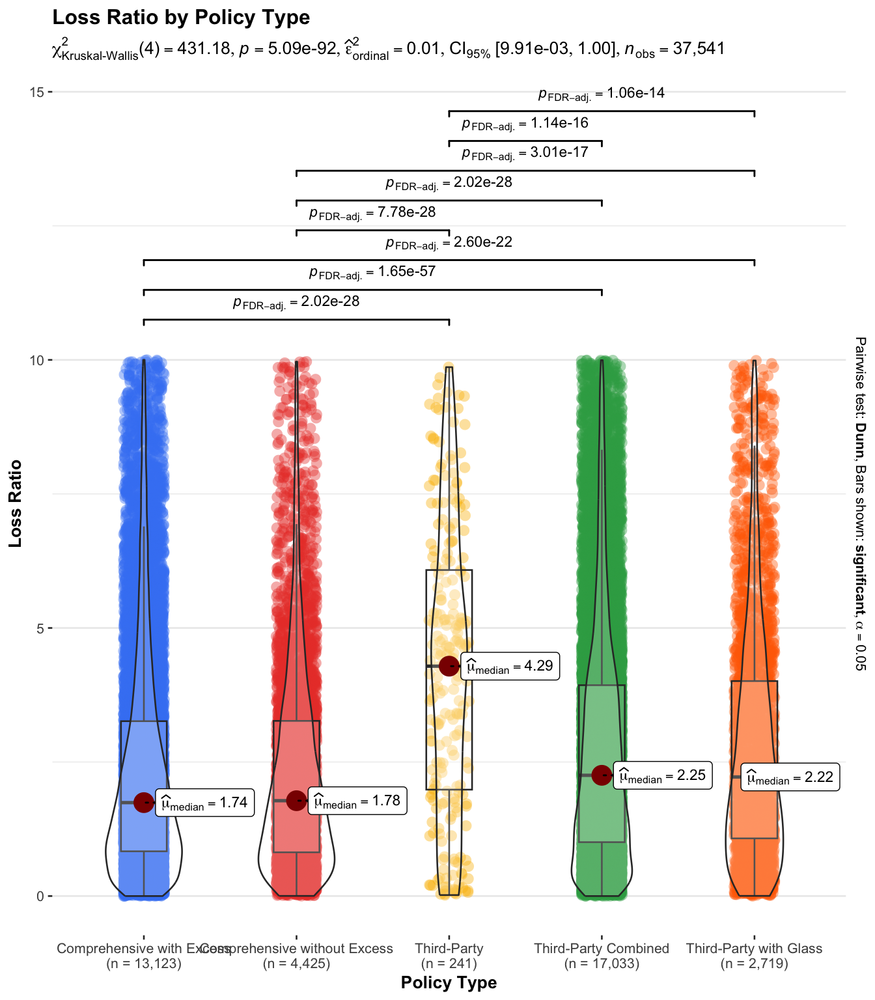
The Kruskal-Wallis test confirms a statistically significant difference in loss ratio across policy types (p = 5.09e-92). The Third-Party policy type has the highest median loss ratio of 4.29 (n = 241), which is notably higher than all other policy types. Among the remaining policy types, Third-Party Combined (2.25) and Third-Party with Glass (2.22) have higher median loss ratios compared to Comprehensive with Excess (1.74) and Comprehensive without Excess (1.78).
ggbetweenstats(
data = insurance_lr,
x = fuel_type,
y = loss_ratio,
type = "nonparametric",
mean.ci = TRUE,
pairwise.comparisons = TRUE,
pairwise.display = "significant",
p.adjust.method = "fdr",
messages = FALSE,
title = "Loss Ratio by Fuel Type",
xlab = "Fuel Type",
ylab = "Loss Ratio",
palette = "Set2"
)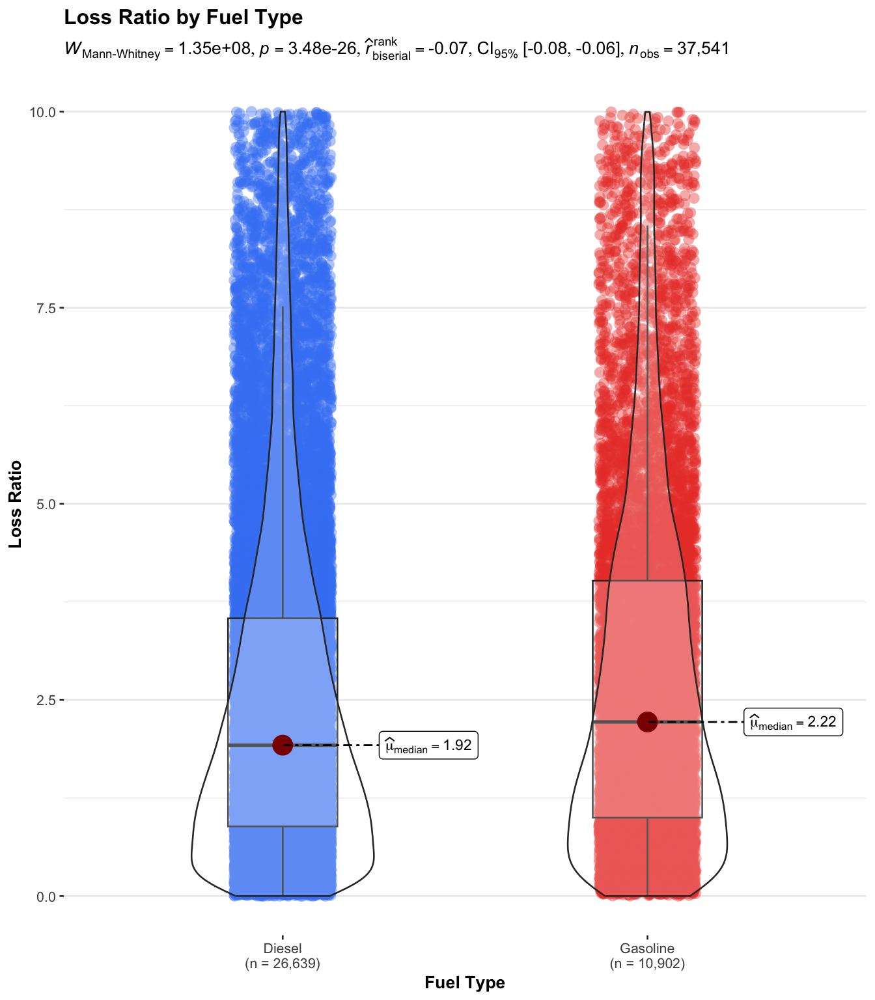
The Mann-Whitney test confirms a statistically significant difference in loss ratio between fuel types (p = 3.48e-26). Gasoline vehicles have a higher median loss ratio of 2.22 compared to Diesel at 1.92. Although the effect size is small (r = -0.07), the difference is statistically significant.
ggbetweenstats(
data = insurance_lr,
x = circulation_area,
y = loss_ratio,
type = "nonparametric",
mean.ci = TRUE,
pairwise.comparisons = TRUE,
pairwise.display = "significant",
p.adjust.method = "fdr",
messages = FALSE,
title = "Loss Ratio by Circulation Area",
xlab = "Circulation Area",
ylab = "Loss Ratio",
palette = "Set2"
)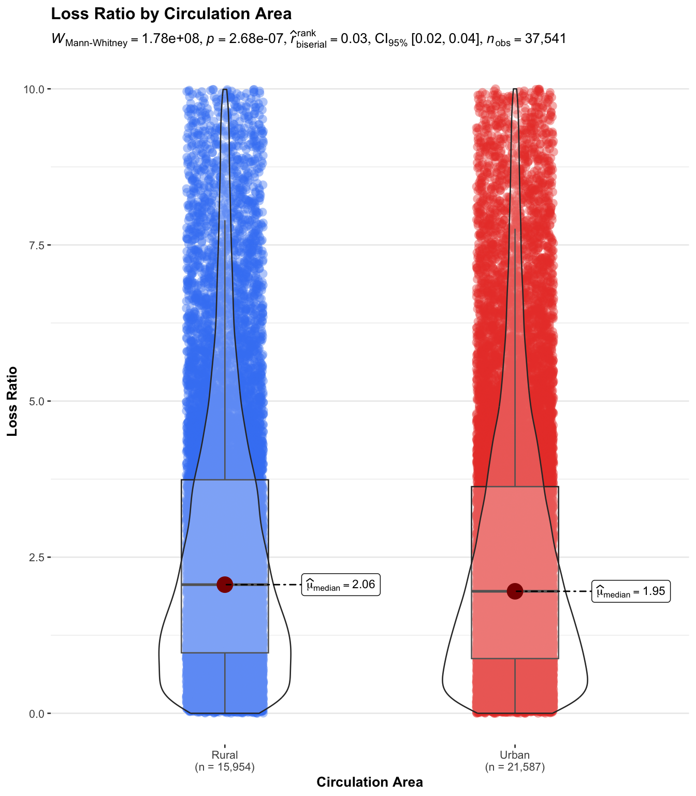
The Mann-Whitney test confirms a statistically significant difference (p = 2.68e-07). Rural drivers have a slightly higher median loss ratio of 2.06 compared to Urban drivers at 1.95. However, the effect size is very small (r = 0.03), suggesting that while statistically significant, circulation area is not practically meaningful as a standalone profitability driver.
The scatterplot below uses ggscatterstats() as it is the most appropriate visualisation for examining the relationship between two continuous variables — it simultaneously shows the scatter of individual data points, the regression trend line, and the Spearman correlation test result.
ggscatterstats(
data = insurance_lr,
x = driver_age,
y = loss_ratio,
type = "nonparametric",
messages = FALSE,
title = "Loss Ratio by Driver Age",
xlab = "Driver Age (years)",
ylab = "Loss Ratio",
marginal = TRUE
)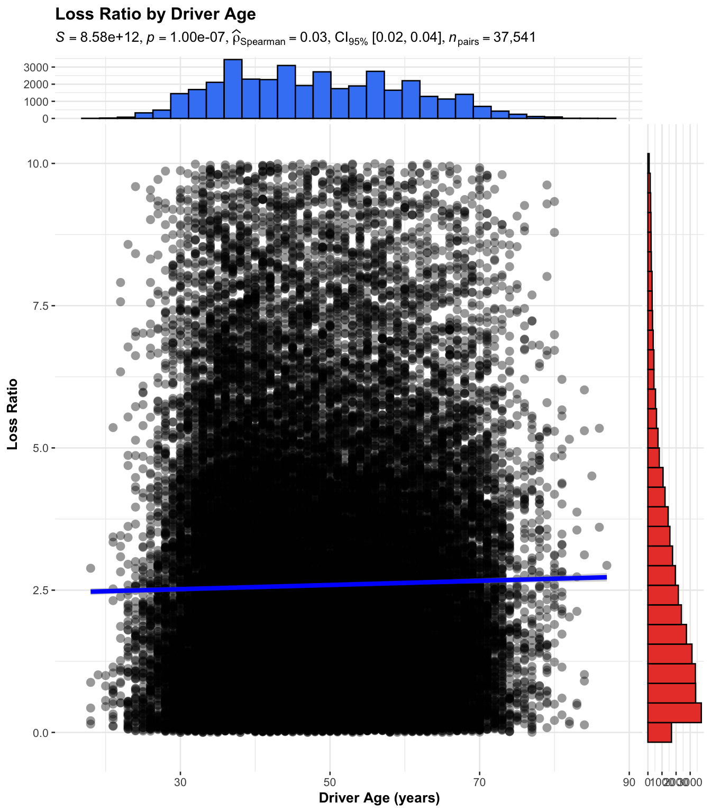
The Spearman correlation test reveals a statistically significant but very weak positive relationship (ρ = 0.03, p = 1.00e-07). The nearly flat trend line confirms that driver age alone is not a strong predictor of portfolio profitability.
6.4 Factors Affecting Claim Frequency (Volatility)
claim_frequency is used as the measure of portfolio volatility. Only policies with a claim frequency between 0 and 10 are included to exclude extreme outliers. The same nonparametric approach is used here as claim_frequency is similarly right-skewed and non-normally distributed.
ggbetweenstats(
data = insurance_cf,
x = bonus_score,
y = claim_frequency,
type = "nonparametric",
mean.ci = TRUE,
pairwise.comparisons = TRUE,
pairwise.display = "significant",
p.adjust.method = "fdr",
messages = FALSE,
title = "Claim Frequency by Bonus Score",
xlab = "Bonus Score",
ylab = "Claim Frequency",
palette = "Set2"
)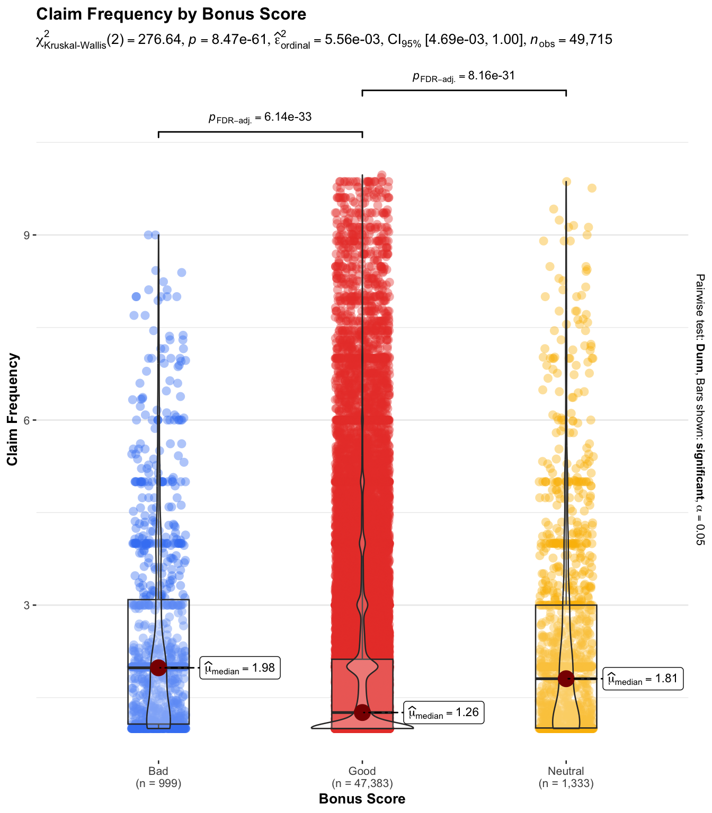
The Kruskal-Wallis test confirms a statistically significant difference in claim frequency across bonus score groups (p = 8.47e-61). As expected, policyholders with a Bad bonus score have the highest median claim frequency of 1.98 (n = 999), followed by Neutral (1.81, n = 1,333) and Good (1.26, n = 47,383). This pattern confirms that past claims history is a reliable indicator of future claim behaviour. All pairwise comparisons are statistically significant.
ggbetweenstats(
data = insurance_cf,
x = policy_type,
y = claim_frequency,
type = "nonparametric",
mean.ci = TRUE,
pairwise.comparisons = TRUE,
pairwise.display = "significant",
p.adjust.method = "fdr",
messages = FALSE,
title = "Claim Frequency by Policy Type",
xlab = "Policy Type",
ylab = "Claim Frequency",
palette = "Set2"
)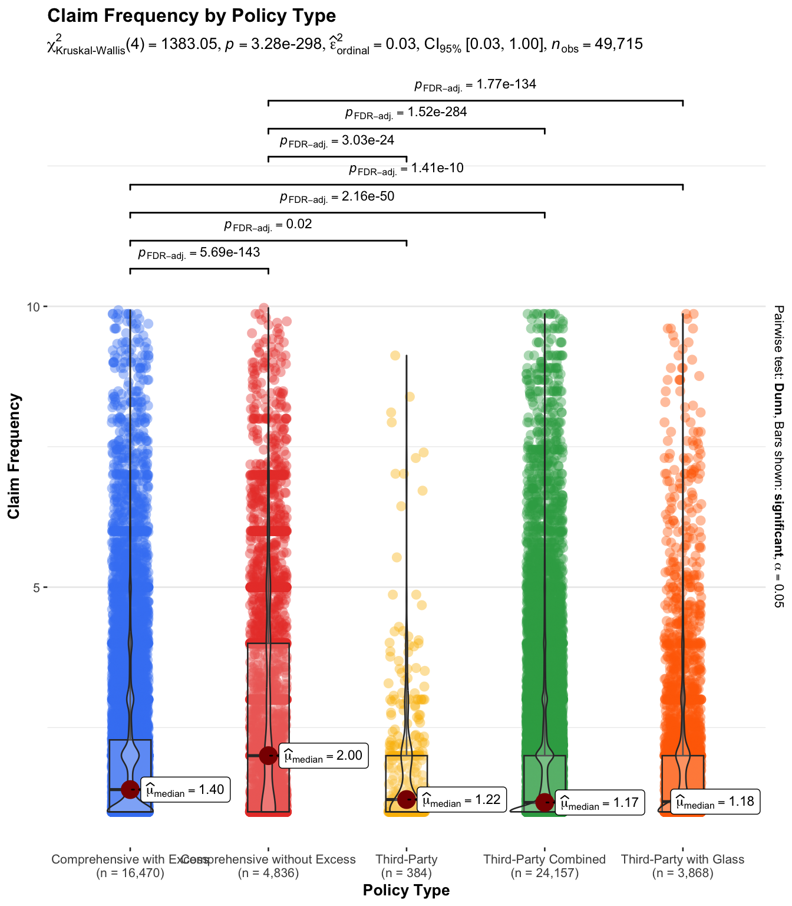
The Kruskal-Wallis test confirms a statistically significant difference (p = 3.28e-298). Comprehensive without Excess policies have the highest median claim frequency of 2.00 (n = 4,836). This suggests that the absence of an excess removes the financial disincentive to file small claims. All pairwise comparisons are statistically significant.
ggbetweenstats(
data = insurance_cf,
x = municipality_type,
y = claim_frequency,
type = "nonparametric",
mean.ci = TRUE,
pairwise.comparisons = TRUE,
pairwise.display = "significant",
p.adjust.method = "fdr",
messages = FALSE,
title = "Claim Frequency by Municipality Type",
xlab = "Municipality Type",
ylab = "Claim Frequency",
palette = "Set2"
)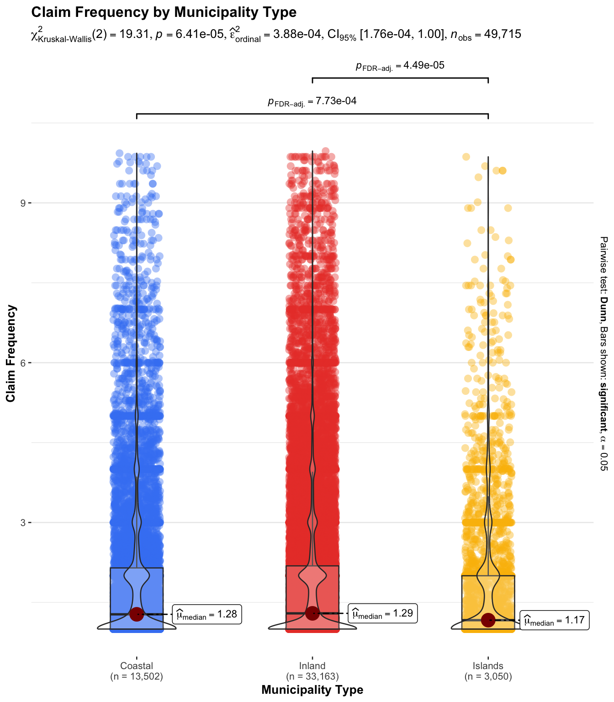
The Kruskal-Wallis test confirms a statistically significant difference (p = 6.41e-05). However, the effect size is negligible, suggesting that municipality type has minimal practical impact on claim frequency.
ggbetweenstats(
data = insurance_cf,
x = circulation_area,
y = claim_frequency,
type = "nonparametric",
mean.ci = TRUE,
pairwise.comparisons = TRUE,
pairwise.display = "significant",
p.adjust.method = "fdr",
messages = FALSE,
title = "Claim Frequency by Circulation Area",
xlab = "Circulation Area",
ylab = "Claim Frequency",
palette = "Set2"
)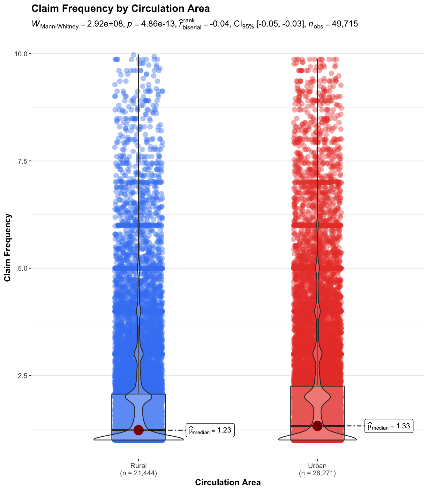
The Mann-Whitney test confirms a statistically significant difference (p = 4.86e-13). Urban drivers have a higher median claim frequency of 1.33 compared to Rural drivers at 1.23, consistent with the higher traffic density in urban environments. However, the effect size is small (r = -0.04).
ggscatterstats(
data = insurance_cf,
x = driver_age,
y = claim_frequency,
type = "nonparametric",
messages = FALSE,
title = "Claim Frequency by Driver Age",
xlab = "Driver Age (years)",
ylab = "Claim Frequency",
marginal = TRUE
)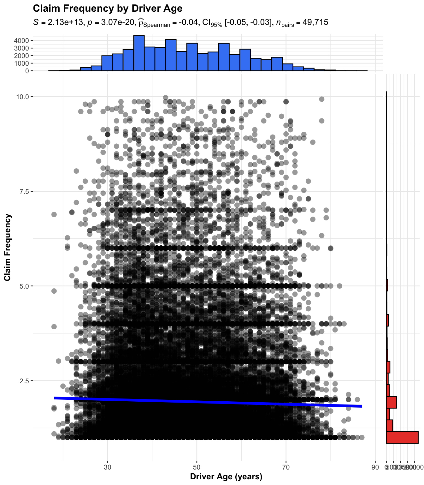
The Spearman correlation test reveals a statistically significant but very weak negative relationship (ρ = -0.04, p = 3.07e-20). Driver age alone is not a meaningful predictor of portfolio volatility in this dataset.
6.5 Distribution Comparison across Key Groups
To complement the statistical analysis in Sections 6.3 and 6.4, ridgeline plots are used to compare the full distribution of loss_ratio and claim_frequency across key grouping variables. Ridgeline plots are chosen here as they allow simultaneous comparison of full distribution shapes across multiple groups — revealing modality, skewness and tail behaviour that boxplots alone cannot convey.
insurance_lr %>%
ggplot(aes(x = loss_ratio,
y = policy_type,
fill = policy_type)) +
geom_density_ridges(alpha = 0.7,
scale = 0.9,
quantile_lines = TRUE,
quantiles = 2) +
scale_fill_manual(values = c(
"Comprehensive with Excess" = "#4a7c6f",
"Comprehensive without Excess" = "#7aadab",
"Third-Party" = "#d4e8e1",
"Third-Party Combined" = "#2d5a51",
"Third-Party with Glass" = "#a8d5c2")) +
labs(title = "Distribution of Loss Ratio by Policy Type",
subtitle = "Vertical line shows median",
x = "Loss Ratio",
y = "Policy Type") +
theme_minimal() +
theme(legend.position = "none")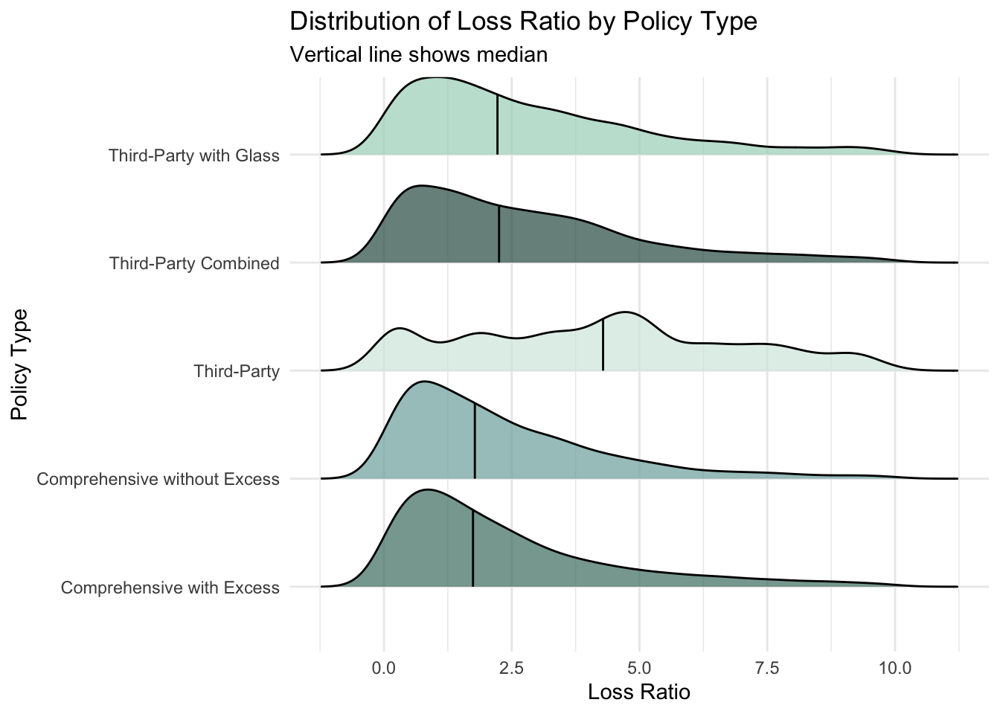
The ridgeline plot provides a clearer view of how loss ratio distributions differ across policy types. Comprehensive with Excess and Third-Party Combined show the narrowest and most concentrated distributions, peaking sharply around 1–2, indicating consistent and predictable loss behaviour. Most notably, Third-Party policies exhibit a distinctive bimodal distribution with two peaks, one around 1–2 and another around 4–5, suggesting two distinct subgroups with very different loss behaviours.
insurance_cf %>%
ggplot(aes(x = claim_frequency,
y = bonus_score,
fill = bonus_score)) +
geom_density_ridges(alpha = 0.7,
scale = 0.9,
quantile_lines = TRUE,
quantiles = 2) +
scale_fill_manual(values = c(
"Good" = "#4a7c6f",
"Neutral" = "#7aadab",
"Bad" = "#d4e8e1")) +
labs(title = "Distribution of Claim Frequency by Bonus Score",
subtitle = "Vertical line shows median",
x = "Claim Frequency",
y = "Bonus Score") +
theme_minimal() +
theme(legend.position = "none")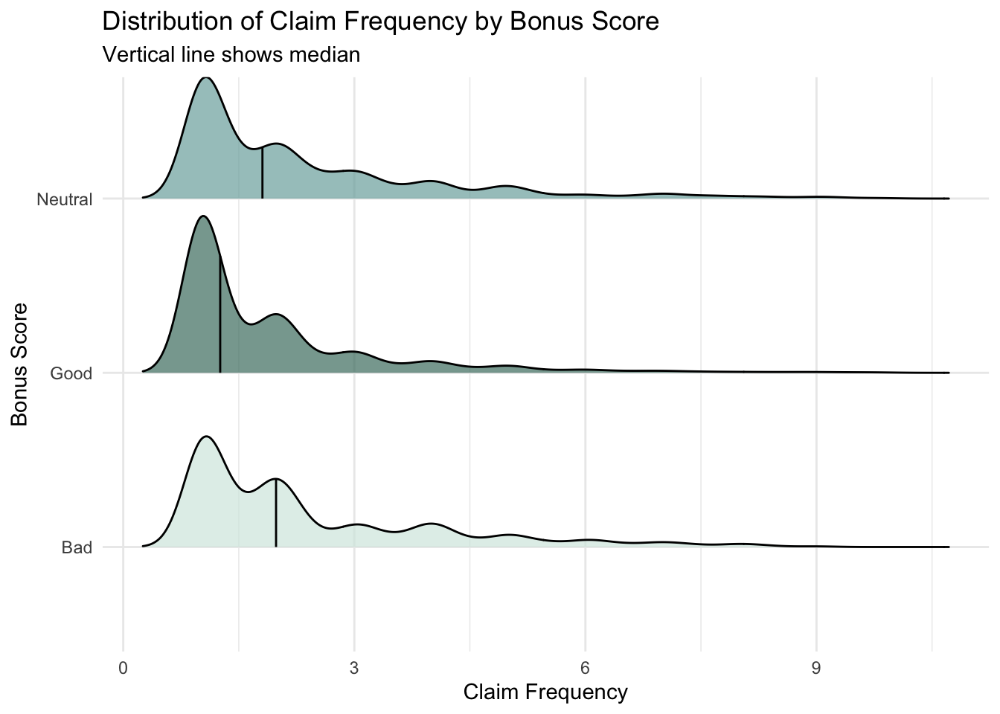
The ridgeline plot clearly shows distinct distribution shapes across bonus score groups. Good bonus score policies show a sharp, concentrated peak around 1. Bad bonus score policies show the widest and most right-skewed distribution, with a long tail extending beyond 6, visually confirming the statistical findings from Section 6.4 that policyholders with a poor claims history exhibit the most unpredictable claim behaviour in the portfolio.
7 Summary
This study applied univariate and bivariate visual analytics techniques to explore a real-world motor vehicle insurance portfolio from a Spanish non-life insurance company, with the aim of uncovering key factors influencing portfolio profitability and volatility.
Key Findings
Portfolio Overview
The portfolio is dominated by middle-aged drivers holding Third-Party Combined policies, with the vast majority of policyholders recording no claims. This suggests a generally low-risk customer base, with a small but significant minority of high-risk policyholders driving most of the portfolio’s losses.
Profitability (Loss Ratio)
Policy type emerges as the strongest differentiator of portfolio profitability. Basic Third-Party policies are the least profitable despite being the least common, while Comprehensive with Excess policies generate the most consistent and stable loss ratios. This suggests that broader coverage does not necessarily translate to higher losses — comprehensive policyholders tend to be more careful drivers who pay higher premiums.
Fuel type and circulation area, while statistically significant, have negligible practical impact on profitability and are unlikely to be meaningful underwriting factors on their own.
Volatility (Claim Frequency)
Bonus score is the most powerful predictor of claim frequency. Policyholders with a Bad bonus score make significantly more frequent claims, contributing disproportionately to portfolio volatility. This confirms that past claims history is a reliable indicator of future claim behaviour.
Comprehensive without Excess policies stand out as the most volatile policy type, likely because the absence of an excess removes the financial disincentive to file small claims.
Recommendations for Future Research
Confirmatory Data Analysis — Future studies should incorporate regression modelling to validate the findings from this exploratory analysis and establish more definitive relationships between the identified risk factors and portfolio outcomes.
Exploring Additional Variables — Variables such as driver occupation, annual mileage, claims history duration and vehicle usage type could provide a more complete picture of risk segmentation.
Longitudinal Analysis — Conducting longitudinal studies to track changes in loss ratios and claim frequencies over a longer time period can reveal trends and seasonal patterns that a three-year snapshot may not capture.
Incorporating External Data — As highlighted by the Swiss Re Institute (2019), enriching the portfolio data with external sources such as traffic density, weather patterns and regional accident statistics could further refine segmentation and improve underwriting strategy.
8 References
Swiss Re Institute. (2019). Advanced analytics: Unlocking new frontiers in P&C insurance (sigma No. 4/2019). Swiss Re Management Ltd. https://www.swissre.com/dam/jcr:3257ef4b-fe20-45e2-9700-7677702407af/sigma4_2019_en.pdf
Pesantez-Narvaez, J. (2023). Motor vehicle insurance portfolio dataset. Mendeley Data, V1. https://data.mendeley.com/datasets/sw4jmdb2sm/1